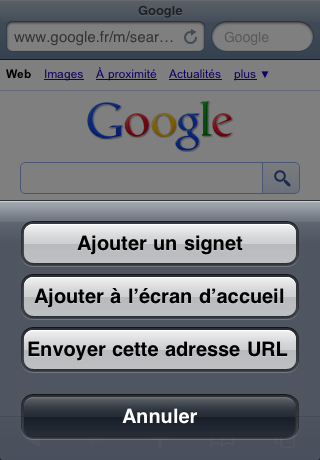
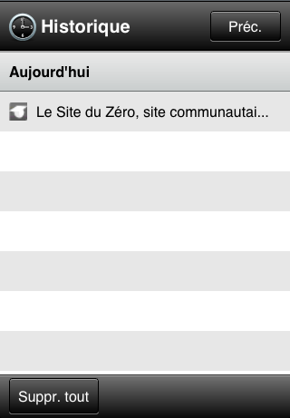

Que vous soyez ici pour Mozilla Firefox ou Google Chrome, pour Safari mobile ou Opera Mini, ce tutoriel donnera les réponses à vos questions. Il se compose en effet de mini-tutoriels détaillant eux-mêmes les fonctionnalités de ces navigateurs Internet, à commencer par Mozilla Firefox.
D'autres tutoriels viendront par la suite pour vous présenter Safari, Opéra, ou même pour Internet Explorer.
Mais, pour vous mettre dans le bain tout doucement avant d'attaquer tête baissée, et aller aux chapitres de la Partie II et la Partie III pour voir les fonctionnalités de chaque navigateur, nous allons d'abord voir d'où vient Internet dans la Partie I. Le principe, le fonctionnement, l'Histoire (avec un grand H :D ) d'Internet (avec un grand I :D ). Commençons donc en douceur. Maintenant, si vous voulez sauter cette étape, libre à vous. :o
Derrière ce slogan d'entreprise de construction se cache en vérité le cœur de la Partie I. Toute l'aventure d'Internet est racontée dans ce livre ces deux chapitres de la Partie I.
Parlons peu mais parlons bien. Commençons dès maintenant.
D'où ça vient ? Pourquoi a-t-il été créé ?
Je vais tenter de répondre à toutes ces questions, pour vous. Je vais essayer de vous parler des plus grandes phases de la création d'Internet, l'Histoire (avec un grand H :D ) de ce réseau mondial. En imaginant, et c'est le cas, qu'Internet n'a pas été créé par un seul petit génie en quête de nouvelle aventure, c'est tout un récit qui se présente à vous, et je vous invite à y prendre part. À faire partie de cette aventure interminable.
Interminable, dans quel sens ?
Dans le sens où il est certain que les fameux créateurs autrefois n'auraient jamais imaginé tout ce que l'on peut faire avec Internet aujourd'hui. Internet a une utilisation quasi illimitée, ouverte à tous, pour le meilleur ou pour le pire. Une utilisation qui dépasse les limites de tout ce que l'on aurait pu imaginer auparavant.
Qu'y avait-il avant Internet ? Avant le réseau mondial que nous connaissons aujourd'hui ?
Avant Internet, il faut savoir que tout ordinateur avait un usage unique. C'est-à-dire que lorsque l'on avait assigné une tâche à un ordinateur, on ne faisait rien d'autre avec la machine, on ne pouvait pas aller plus loin. On pouvait utiliser des traitements de texte, une calculatrice ou tout autre programme du moment, mais il était difficile d'avoir recours à une sorte de connexion avec d'autres ordinateurs. :-° Très peu de personnes connaissaient cela à l'époque, et en général les utilisateurs s'en contentaient. L'idée avait tout de même été approchée par des ingénieurs, des chercheurs qui avaient imaginé et réalisé une structure dans laquelle les ordinateurs étaient tous raccordés à un ordinateur central par de longues lignes. L'ordinateur central était donc le seul moyen de communication vers l'extérieur, permettant ainsi l'échange de données. Il n'était pas encore possible de communiquer avec tout autre ordinateur connecté à l'ordinateur central.
Joseph Carl Robnett LickliderC'est un certain Joseph Carl Robnett Licklider qui mit en avant l'idée de relier tous les ordinateurs entre eux, de manière à partager les informations comprises dans chaque machine. Ce dernier fut d'ailleurs promu à la tête du bureau de traitement de l'information de la Defense Advanced Research Projects Agency (DARPA ou ARPA), sous la tutelle du département de la défense des États-Unis, pour fournir les idées pour le premier grand réseau.
Robert TaylorCe sont ces idées que Robert Taylor mit en pratique pour créer le réseau ARPANET. ARPANET signifie littéralement Advanced Research Projects Agency Network. Ici, le réseau servait initialement à faire communiquer les ordinateurs des universités de Californie à Los Angeles et le Stanford Research Institute. Cette connexion fut mise en place le 21 novembre 1969. Un peu plus de deux semaines plus tard, le 5 décembre, le réseau fut agrandi par les universités d'Utah et de Californie à Santa Barbara. C'était la première fois qu'un réseau à quatre points était construit. En parallèle, le réseau ARPANET servit à l'armée américaine. Le but de ce dernier était de concevoir un réseau invulnérable aux attaques (comme nous l'avons aujourd'hui) : si une maille du filet est hors fonctionnement, le but est de pouvoir continuer à faire circuler l'information sans problème. Autrement dit, chaque utilisateur peut partir et revenir sans perturber le réseau et le transfert des informations.
Suite à cela, le développement des réseaux, et de tout ce qui tournait autour, s'accéléra. La création de ces réseaux se fit très progressivement.
Il faut quand même préciser que peu de pays y participèrent. Les collaborations internationales restèrent rares.
Tous ces réseaux en développement (ceux des différentes universités, celui de l'armée, etc.) n'étaient cependant pas mis au point de la même manière. Certes, tous partaient du réseau ARPANET, mais tous étaient construits avec différents moyens de communication. Un protocole (une sorte de norme dédiée à l'informatique) devait être créé pour uniformiser les réseaux, pour généraliser la création de ceux-ci. Autrement dit, il y aurait une seule méthode persistante pour créer les réseaux. Les autres ne seraient plus utilisées.
Pourquoi chaque personne ne pouvait-elle pas utiliser sa propre méthode pour créer un réseau ? Pour communiquer entre les différents ordinateurs ?
Parce que tous les réseaux n'échangeaient pas les informations de la même manière. Il aurait été difficile (voire impossible, tout du moins pour l'époque), de faire coïncider les différents moyens de communication. Alors, pour réunir les réseaux, il fallait trouver une méthode commune, identique, de communication. Ainsi, la première unification concernait le protocole de communication. Alors qu'il y avait précédemment un protocole pour les réseaux, le protocole NCP qui ne servait qu'au transfert des données de poste à poste sur les réseaux ARPANET, celui-ci devait être remplacé : il devenait obsolète.
Au bout de plusieurs années de travail financées par la DARPA, on créa alors les protocoles TCP/IP. C'était Internet qui venait d'être créé puisque l'IP, était, comme son acronyme l'indique, le protocole d'Internet (Internet Protocol en anglais). Autrement dit, utiliser les protocoles TCP/IP, c'était utiliser Internet.
Internet ou le réseau mondial
Plus qu'un mot...
Internet, qu'est-ce que c'est ? Derrière un concept hors du commun se trouve un nom des plus simples une fois qu'on en a compris le sens.
"Internet" est un mot-valise. Non, non, ne repartons pas à l'école pour apprendre cette définition tout droit sortie d'une salle de classe. Sachez simplement qu'un mot-valise est un mot, lui-même formé par deux mots (ou plus) qui ont été réunis.
Donc Internet est le mot valise de inter et de networks. Inter signifie entre, Networks signifie Réseaux. Internet, c'est donc une connexion entre (inter) les réseaux (networks).
... un concept
Comme nous l'avons vu, il existait déjà quelques réseaux. Même si leur nombre n'était alors pas encore celui que nous avons aujourd'hui (puisqu'il existe à l'heure actuelle des réseaux pour à peu près tout le monde : les militaires, les écoles, les facs et les universités, les gouvernements, les entreprises, fournisseurs d'accès et les particuliers), le but d'Internet était donc de les réunir, de manière universelle, pour n'en former plus qu'un, mondial !
Mais ce n'est pas tout. L'IP intègre des mesures de sécurité qui empêchent (à la hauteur des technologies qui composent ce protocole) la propagation de virus dans les fichiers transmis.
Enfin, tous les utilisateurs d'Internet accèdent aux mêmes informations. Il n'y a aucune exception à la règle. Que vous habitiez à Paris ou au fin fond de l'Alaska, vous accédez aux mêmes informations, aussi rapidement. La seule chose qui peut diverger entre les utilisateurs, c'est le débit de connexion.
Chose très importante cependant dans la gestion d'Internet : la connexion entre les réseaux n'est là que pour le partage d'informations. À vous de faire ce que vous souhaitez de l'information dont vous disposez. Internet ne propose aucun service dans ces cas-là.
Après le regroupement des réseaux, il y eut séparation du réseau ARPANET, et les différentes entités furent mises sous la responsabilité de la Defense Communications Agency. Une partie spéciale du réseau fut renommée MILNET, le réseau militaire (Militaire Network).
Les réseaux, financés par le gouvernement, se devaient de n'être en aucun cas commerciaux. Ils servaient, au départ, principalement à la recherche. Les communications étaient donc réservées, restreintes, à l'armée et aux universités. Internet s'est finalement étendu à l'éducation entière, ainsi qu'aux entreprises, telles que Digital Equipment Corporation et Hewlett-Packard qui participaient à la recherche. Ainsi, l'administration américaine et la National Science Foundation s'investirent énormément dans la recherche et s'impliquèrent dans le développement du successeur de l'ARPANET.
Les réseaux s'unifiaient et les nouveaux créés entraient dans la ronde. Le terme "Internet" était alors communément employé. Internet avait bel et bien atteint le rang mondial.
Cependant, l'utilisation d'Internet à des fins commerciales resta longtemps un sujet de débats. Les interdits restant pour le moins flous, nombre d'utilisations (dites commerciales) furent faites sans pour autant être sanctionnées. Ce n'est qu'en 1980 que les premiers fournisseurs d'accès furent créés.
Ce développement conclut en la création en 1984 d'un premier réseau étendu utilisant le TCP/IP. Le réseau s'agrandit petit à petit.
La fin de l'ARPANET
C'est en 1990 que l'ARPANET fut remplacé, mis à jour si l'on peut dire. Les technologies qui lui succédèrent étaient plus récentes et permettaient une utilisation plus souple. Le projet de l'ARPANET prit donc fin. Successeur, le projet NSFNet, renommé ANSNET (Advanced Networks and Service pour "Réseaux Avancés et Services"), permettait l'accès aux sociétés à but non lucratif. Mais il prit lui aussi fin, en 1994. Et les différentes institutions (gouvernementales, sociétaires) créèrent leurs propres réseaux, ce qui fit tomber les restrictions commerciales de l'utilisation de l'Internet.
Maintien et contrôle d'un Internet organisé autour du World Wide Web
Internet connaissait son premier accident. Malgré un développement toujours plus intensif, il y avait un imprévu dans le financement : la gestion des réseaux. Si Internet était ouvert à tous, et qu'il n'appartenait à personne et à tout le monde (aucune personne, aucun groupe, aucune entreprise, aucune organisation n'en avait le contrôle absolu et tout le monde pouvait l'utiliser), il était clair que le maintien des réseaux devenait absolument indispensable. Sans être trop présent, mais en étant tout de même là, un contrôle devait être effectué, pour le bon fonctionnement du système.
La première autorité centrale à coordonner les opérations du réseau était le Network Information Center, abrégé NIC, du Stanford Research Institute situé à Menlo Park en Californie. En 1972, la gestion de ces problèmes fut transmise à la toute récente Internet Assigned Numbers Authority, abrégé IANA.
Alors que l'Internet se développait à une vitesse fulgurante, l'organisation de tout cela devenait véritablement problématique.
Aperçu du ViolaWWWC'est dans le but d'organiser Internet que furent créés les premiers noms de domaines. Furent aussi créés les premiers navigateurs, suite à la standardisation des pages web à l'hypertexte. C'est un chercheur du CNRS qui créa le premier navigateur Web : ViolaWWW. Celui-ci fut rapidement détrôné par NCSA Mosaic, un navigateur graphique développé par une équipe du National Center for Supercomputing Applications de l'université de l'Illinois à Urbana-Champaign (NCSA-UIUC). Logo NCSA Mosaï Cliquez pour avoir un aperçu du navigateurL'interface graphique de Mosaïc devint rapidement très populaire. Netscape Navigator, un nouveau navigateur qui sortit en 1994, remporta lui aussi beaucoup de succès et finit par causer la perte de Mosaïc. Il devint en quelques mois le navigateur le plus populaire au monde. Depuis, la concurrence avec Internet Explorer, le navigateur de Microsoft, l'a évincé. Des anciens de Netscape développèrent Mozilla, puis Firefox. Aujourd'hui, on l'a vu, les développeurs de Netscape comptent reprendre du service. Les deux principaux navigateurs actuels sont Firefox et Explorer, même si on note la présence d'autres acteurs dont par exemple Safari, Opera et le tout dernier venu : Google Chrome.
Tim Bernes-LeeLe problème de maintien du réseau persistait, cependant ralenti par l'apparition, entre autres, des navigateurs et moteurs de recherche. Le problème qui subsistait, c'était qu'aucun standard n'avait été mis en place. Dans la création d'une page Web par les auteurs du site Internet et même dans l'affichage de celle-ci, chacun faisait comme il le voulait.
C'est en 1991 que Tim Berners-Lee, accompagné de Robert Cailliau, du CERN, inventa le World Wide Web, l'interface (l'affichage) de l'Internet qui permettait de construire un standard quant à la consultation grand public des sites.
Le W3C et ses éléments
Peu après, en 1994, a été créé le World Wide Web Consortium, abrégé W3C. C'est une sorte d'association à but non lucratif, composée d'environ 400 organisations, qui émet des recommandations sur les standards industriels. Ici, on ne parle pas de normes obligatoires dans la création d'un produit, mais bel et bien de recommandations.
C'est pour tenter d'avoir une correspondance, une compatibilité entre les technologies que le W3C existe.
Le W3C est aussi chargé de promouvoir des éléments d'Internet, tels que le XHTML, CSS, le XML, PDF, PNG, etc. Bref, le W3C cherche une cohérence dans l'utilisation d'Internet.
Et devinez quoi ? le W3C est dirigé par Tim Bernes-Lee. On peut donc dire que c'est en grande partie grâce à lui qu'Internet existe tel que nous le voyons.
Pendant ce temps...
Vint en parallèle la création des moteurs de recherche. Le premier venu fut WebCrawler () en 1994. Un autre projet, universitaire celui-ci, fut créé : il s'agit de Lycos. Ce fut un très grand succès commercial.
Dès janvier 1999, le moteur de recherche Google (c'est qui lui ? :euh: ( :p ) ) référençait plus de 60 millions de pages et la croissance continue. Le développement se fait à la fois dans l'accroissement de la base de données et de la méthode d'affichage des pages.
Aujourd'hui...
Du récit au jour le jour d'un blog, à la mise en ligne de photo sur Flickr, en passant par l'encyclopédie libre de Wikipédia, tout est le résultat de la facilité grandissante de la création d'un site Internet public.
De plus, les communications via l'Internet ont été facilitées par l'apparition de services téléphoniques VoIP tels que Skype. La demande d'accessibilité à des contenus à complexité de plus en plus grande a conduit à la mise à disposition sur la toile de média de toutes formes, comprenant ceux que l'on trouvait au format traditionnel (journaux, radio, télévision et films). La structure poste à poste de l'Internet, plus connue sous le dénominatif anglais de peer-to-peer, abrégé P2P, a aussi influencé les théories sociales et économiques de la propriété intellectuelle, essentiellement en permettant la montée en puissance du transfert de fichiers. La tendance depuis 2004 est l'apparition d'applications web 2.0 pour lesquelles l'internaute joue un rôle participatif.
Même si notre histoire se termine ici, il est clair que ce n'est pas la fin au sens propre du terme. D'autres personnes se sont relayées pour améliorer encore et encore Internet, comme nous le voyons aujourd'hui, via notre navigateur et les autres logiciels. C'est donc, comme je le précisais en introduction, une aventure interminable. :)
Le prochain chapitre est là pour détailler l'utilisation d'Internet, l'utilisation qu'on en fait avec les navigateurs, entre autres.
Principale source du chapitre : Wikipédia. Certaines pages du Wiki détaillent plus certains événements, vous pouvez en apprendre plus si vous le souhaitez.
Comme je vous l'ai dit, Internet n'est que le moyen de communiquer des informations entre plusieurs ordinateurs. Impossible ensuite d'interpréter ces informations si on n'a pas ce qu'il faut sur son ordinateur.
Je vous ai parlé tout à l'heure des navigateurs Internet. La question est :
comment fonctionnent-ils ?
C'est le protocole TCP/IP qui fait tout ! Non, encore une fois, Internet, et donc par définition les protocoles TCP/IP ne sont là que pour transmettre les informations. En fait, il existe d'autres protocoles. D'innombrables protocoles pour tout dire, correspondant eux-mêmes à d'innombrables logiciels.
Voyons cela !
Les différentes utilisations d'Internet : les protocoles
Nous avons vu dans le chapitre précédent qu'Internet était en fait constitué de deux protocoles TCP/IP, dont l'un, l'IP, acronyme d'Internet Protocol, était le plus connu. Que ces protocoles servaient aux transferts d'informations dans les réseaux : réseaux qui, regroupés, constituaient l'Internet mondial. Je vous ai aussi précisé en fin de chapitre, et rappelé en introduction, que ces protocoles servaient UNIQUEMENT aux transferts de données. Ainsi, impossible de faire quoi que ce soit de ces informations.
Alors voilà, je vous donne l'explication : il existe un nombre incalculable d'autres protocoles. Je vais vous énumérer des protocoles qui permettent le traitement des informations reçues. Bien sûr, cette liste est non exhaustive et ne vous donne que les protocoles les plus connus. ;) Je vais aussi vous expliquer leur utilité, et vous décrire précisément le protocole qui est utilisé par les navigateurs Internet : HTTP. Les navigateurs ne sont que l'interface que voit l'utilisateur ; derrière, il y a beaucoup plus de choses que ça. Derrière, il y a Internet.
HTTP : le protocole du Web...
De loin le protocole le plus utilisé sur Internet depuis une vingtaine d'années, HTTP, acronyme de HyperText Transfert Protocol, a été développé par le World Wide Web et permet le transfert et l'utilisation de fichiers au format HTML. Une autre version appelée HTTPS permet de faire la même chose, mais avec la sécurité en plus. En effet, le "S" signifie Secured, pour Sécurisé.
C'est du fait de l'utilisation du protocole HTTP en complément du contrôle instauré par le World Wide Web, dont je vous ai touché deux mots dans le précédent chapitre, que les adresses URL de chaque page Internet se composent obligatoirement de l'acronyme http et généralement (quand ce ne sont pas des sous-domaines que vous visitez) de www. Ce qui, au final, fait commencer l'adresse par http://www.
C'est d'ailleurs pour nous faciliter son utilisation qu'existent aujourd'hui tous les navigateurs Internet. Ces logiciels utilisent le HTTP pour transporter les pages HTML, les images, les musiques, etc. qui composent les pages que vous visitez.
... et tant d'autres
Mais il existe bien sûr beaucoup d'autres protocoles. Cette liste est donc, je le répète, largement incomplète.
Le protocole DNS
Le protocole DNS est un service permettant d'établir une correspondance entre une adresse IP et un nom de domaine. Généralement, ce protocole est utilisé pour trouver une information à partir d'un nom de domaine.
Vous recherchez dans un annuaire un numéro de téléphone à partir des nom, prénom et adresse d'un correspondant : là, c'est la même chose, mais avec l'adresse IP et le nom de domaine de l'internaute, de l'utilisateur.
Le protocole FTP
Le protocole FTP permet l'échange de fichiers sur un réseau TCP/IP. Les développeurs Web connaissent bien ce protocole car il permet d'envoyer des fichiers vers un site web (donc vers le serveur qui héberge le site). Il permet la copie, la modification et la suppression des fichiers disponibles sur l'ordinateur et / ou sur le serveur.
Le client le plus connu est FileZilla (j'aurais peut-être l'occasion de faire un tutoriel - plus tard, ce n'est pas à l'ordre du jour - pour expliquer son fonctionnement).
Le protocole IRC
Le protocole IRC (en français, « discussion relayée par Internet »), permet de discuter en direct en conversation écrite avec les autres utilisateurs. Un peu à la manière de Windows Live Messenger, il permet de discuter en tête à tête, mais aussi de créer des salons de discussions.
Actuellement en vogue, ce protocole sert principalement aux joueurs en ligne, qui peuvent ainsi se parler en même temps que de jouer, des logiciels leur permettant d'utiliser le protocole de manière simple et pratique. L'utilisation de salons peut se faire de manière fermée - pour n'en autoriser l'accès qu'à certains utilisateurs.
Le protocole ICQ
ICQLe nom ne vient pas ici d'un acronyme, mais d'un son. Le protocole s'appelle littéralement "I Seek You", prononcé "aie-sic-iou". Ce protocole est prioritaire. Il a été créé par des étudiants israéliens, ceux-ci ont d'ailleurs fondé Mirabilis en novembre 1996, société aujourd'hui éditrice d'ICQ. Mirabilis a été rachetée par AOL en 1998, et ICQ est devenu compatible avec le client d'AOL AIM.
ICQ est l'évolution des messageries instantanées comme IRC. Il a provoqué un engouement et une effervescence dès son lancement, le logiciel étant signe de liberté pour les internautes, de facilité d'utilisation dans la discussion ou la rencontre de nouvelles personnes.
Cet attrait s'est un peu dissipé depuis 2005 avec l'apparition et l'amélioration de Skype et de Windows Live Messenger. Trop de fonctionnalités (apparues depuis son lancement) ont fait d'ICQ un logiciel lourd, et une usine à gaz dans son utilisation réputée très simple. Enfin, les utilisateurs ont de plus en plus tendance à réduire le cercle de contacts, ne permettant pas aux inconnus de leur parler. ICQ semble donc avoir pris du recul, malgré l'utilisation du service par des millions d'utilisateurs à travers le monde.
Les protocoles SMTP et POP
Les protocoles SMTP (littéralement "Protocole simple de transfert de courrier" ) et POP (littéralement "le protocole du bureau de poste") sont tous les deux des protocoles qui permettent respectivement de transférer et de récupérer des courriers électroniques sur les serveurs de messagerie électronique.
Ici, pas besoin de préciser je suppose. ^^
... et d'autres encore
Il existe d'autres protocoles qui permettent de faire de la visioconférence (avec Skype par exemple), de mettre les ordinateurs à l'heure, et bien d'autres encore ! C'est dire toutes les utilisations que l'on peut faire d'Internet.
Depuis le début, je vous dis que l'histoire d'Internet est interminable et que les protocoles sont innombrables. Il y a une raison, et une bonne.
En fait, on ne peut pas compter le nombre de ces protocoles, car si Internet vous permet d'utiliser les protocoles, Internet vous permet aussi d'en créer.
Bon, d'accord, là on a dépassé largement la simple utilisation et on rentre dans le cadre technique du développement de protocoles, ce que ce tutoriel n'abordera pas. Mais tout ça, c'est pour vous dire à quel point vous pouvez utiliser Internet à votre manière. En fait, vous faites un protocole, vous créez un programme en association et vous faites correspondre votre adresse IP.
Oui, mais je ne pourrais plus discuter avec mes contacts avec ce nouveau protocole ?!
Mais si ! Il suffit d'associer ce protocole avec un autre programme déjà existant, et le tour est joué ! Enfin, joué pour les connaisseurs, les développeurs. À vous d'en apprendre plus sur le sujet, je ne comptais qu'aborder en surface ce point d'Internet. ;)
Un monde relié en tous points
C'est là qu'on voit toutes les utilisations d'Internet que l'on peut faire : vous pouvez associer n'importe quoi avec n'importe quoi d'autre. Vous pouvez associer la boîte de dialogue de votre ordinateur à celle de votre chaîne Hi-fi, à celle de votre télé, à celle de votre éclairage, et plus si affinités. Bref, une utilisation sans limites !
Mais des projets sont déjà en cours de réalisation pour parvenir à ce but !
De l'IPv4 à l'IPv6
Et il va bientôt passer à sa version 6.
Pourquoi pas IPv5 ?
Lors du baptême du protocole IPng, l'IETF, l'Internet Engineering Task Force (littéralement le "Détachement d'ingénierie d'Internet") a volontairement sauté un numéro de version pour aller de 4 à 6, car la référence IPv5 était déjà réservée au protocole expérimental ST-II (Stream Protocol version 2) sensé apporter un contrôle de flux. Celle-ci a depuis été abandonnée au profit de la procédure tierce RSVP qui a l'avantage de coopérer avec l'existant.
L'RSVP, acronyme de Resource ReSerVation Protocol est un protocole qui permet de réserver des ressources dans un réseau informatique.
Les nouveautés de la version
L'utilisateur n'aura rien de plus, rien de moins, si ce n'est quelques petites améliorations.
Déjà, il y aura plus de souplesse dans l'acquisition et l'utilisation d'adresse IP car le nombre d'adresses IP possibles est beaucoup plus important qu'avec l'IPv4 : cette nouvelle version permettra donc d'associer une adresse IP aux internautes de façon beaucoup plus simple et fluide, mais aussi de faciliter la connexion et ainsi le transfert de données. Enfin, il y aura plus de sécurité par rapport aux programmes malveillants et autres virus qui peuvent être contenus dans les fichiers transférés.
Ce sont là trois points qui étaient très problématiques dans la version 4 de l'IP. Cette nouvelle version est donc prometteuse, il ne reste plus qu'à la tester, une fois celle-ci mise à jour dans les programmes et les systèmes.
La mise à jour du protocole
Pour passer à l'IPv6, il faudra mettre à jour tous les programmes. Heureusement, les systèmes d'exploitation les plus récents (Windows XP / Vista, Mac, Linux, etc.) sont déjà capables de comprendre cette version.
Je vous invite à vous informer de manière plus approfondie dans cette nouvelle version de l'IP, dans le côté technique du protocole. C'est un sujet qui mérite d'être vu plus en détail pour les plus curieux d'entre vous. ;)
Vous savez maintenant une grande partie de ce qu'il faut savoir sur l'utilisation d'Internet. Sur les protocoles, sur les réseaux, etc.
Nous venons de terminer la partie théorique, commençons la partie pratique. :)
Vous savez maintenant une bonne partie de ce qu'il faut savoir. Bien sûr, si vous voulez en apprendre plus, Internet regorge d'articles sur son histoire, vous n'aurez aucun mal à en trouver. ^^ Je ne vous ai donné ici que le principal.
Internet, qui a été créé il y a quelques dizaines d'années est donc, vous l'avez vu, très différent de l'Internet actuel. Son développement ne cesse pas et n'a jamais cessé à tel point qu'il est difficile de savoir jusqu'où iront toutes ces technologies qui composent les réseaux actuels. Ce que l'on sait, c'est que la concurrence sera toujours là pour pousser les entreprises dans le domaine à faire toujours plus, toujours plus vite et toujours mieux. À nous d'en tirer le meilleur. :)
Ce premier tutoriel de la partie II traite d'un navigateur des plus connus et surtout des plus utilisés : Mozilla Firefox.
Si vous êtes ici, sur ce tutoriel, il y deux possibilités :
vous avez déjà téléchargé Mozilla Firefox (ou vous vous apprêtez à le faire) et vous souhaitez avoir plus d'explications sur le fonctionnement et son utilisation (à noter qu'il est conseillé de télécharger le logiciel sur le site officiel - lien proposé) ;
vous préférez en savoir plus sur le logiciel avant de le télécharger ou de l'installer sur votre système d'exploitation.
Une autre raison vous amène sur ce tutoriel ? Pas de problème ! Dans tous cas les cas, vous y êtes le bienvenu. Vous trouverez, j'en suis sûr, les réponses à vos questions. Ce tutoriel est rédigé exprès pour une étude du logiciel, de ses fonctionnalités. ^^ Si malgré tout vous ne trouvez pas de réponses, posez vos questions dans les commentaires ou les forums. ;)
Mozilla Firefox est un logiciel de navigation Internet développé par la Fondation Mozilla depuis sa sortie le 9 novembre 2004.
La Mozilla Foundation
La Mozilla Foundation est un organisme à but non lucratif qui a été créé à l'été 2003. C'est elle qui gère les développements des logiciels libres Open-Source de la suite Mozilla, elle-même créée en 1998. Son slogan : "préserver le choix et l'innovation sur l'Internet". Le siège social est basé à Mountain View (Californie), la société a dès le départ embauché nombre de développeurs, et ce notamment grâce à des dons ou des accords, avec AOL, Google, ou même privés.
Les deux logiciels de la suite Mozilla les plus connus sont Mozilla Firefox et Mozilla Thunderbird.
Mozilla Firefox et ThunderBird C'est en 2005 que la Mozilla Corporation, société à but lucratif, filiale à 100 % de Mozilla Foundation est créée, dans le but de s'occuper entièrement du développement et du marketing de Mozilla Firefox. Et c'est seulement en 2008 que Mozilla Messaging fut créée, au même titre que la précédente, pour s'occuper, elle, du développement et du marketing de Mozilla Thunderbird (ce lien pointe sur un très bon tutoriel de ruudvannistelrooy qui vous explique en détail comment installer, configurer et utiliser Mozilla Thunderbird.)
Revenons à notre logiciel, Mozilla Firefox, et retournons dans le passé jusqu'à l'origine même, l'idée qui germa dans la tête des deux fondateurs et développeurs du projet : David Hyatt et Blake Ross.
L'origine de Mozilla Firefox
Le projet Firefox est sorti en novembre 2004. C'est une branche expérimentale de Mozilla, dirigée par David Hyatt et Blake Ross. Le nom initial du projet est Phénix. Dès le début, le logiciel est doté d'un mécanisme d'extensions. Ce choix permet à l'utilisateur de personnaliser son navigateur comme il le souhaite, tout au long de son utilisation.
Le 23 septembre, une première version utilisable fait son apparition. Toujours sous le nom de Phénix qui devra cependant être changé le 14 avril 2003, car la marque était déjà détenue dans ce domaine par le constructeur de BIOS Phoenix Technologies. Le nouveau nom, « Firebird » (oiseau de feu), ne rencontra pas un grand enthousiasme. De plus ce nom était déjà utilisé par un autre logiciel libre, le gestionnaire de bases de données Firebird. Fin avril 2003, la Fondation Mozilla a donc publié un communiqué indiquant qu'il fallait se référer au navigateur en utilisant le nom « Mozilla Firebird » pour éviter la confusion. Cependant, la pression constante de la communauté força un nouveau changement, et le 9 février 2004, Mozilla Firebird fut finalement renommé Mozilla Firefox. Le nom de Mozilla Firefox resta définitivement dans les annales.
Le nom Firefox (littéralement « renard de feu » et dont le logo est un petit panda ou panda roux) a été choisi, déjà pour ses similarités avec « Firebird », ensuite parce qu'il était unique dans l'industrie informatique. Pour s'assurer qu'un nouveau changement de nom ne serait pas nécessaire, la Fondation Mozilla avait d'ailleurs, en décembre 2003, lancé une procédure d'enregistrement du nom Firefox comme une marque déposée aux États-Unis. L'abréviation officielle de Firefox est depuis lors Fx ou fx, bien que dans le langage courant, certains utilisateurs emploient souvent l'abréviation FF, ff ou MF.
Attaquons maintenant la partie pratique du tutoriel.
Déjà, parlons de la question sécurité en cette première partie pratique, essentielle aujourd'hui si vous surfez sur Internet. Mozilla Firefox répond avec brio à cette problématique puisqu'il dispose d'outils de sécurité et de confidentialité. Mozilla Firefox permet, entre autres choses, de contrôler la sécurité des sites web pour éviter que l'utilisateur ne soit redirigé vers un site dangereux, que l'ordinateur puisse être la cible d'attaque et d'utiliser son logiciel anti-virus en tierce partie de manière à sécuriser tous les téléchargements de l'utilisateur. Il intègre aussi un module de gestion des mots de passe et des sessions, ainsi que des données personnelles.
Enfin, grand avantage, Mozilla Firefox se met à jour automatiquement. Nul besoin de vérifier de ce côté-là, le logiciel le fait lui-même à chaque démarrage. ;)
Contrôler la sécurité des sites web
Parlons tout d'abord du système de reconnaissance des sites web. Ce système, en premier lieu, vous indique si le site que vous visitez présente des risques de sécurité pour votre ordinateur. Si c'est le cas, une fenêtre vous le fera savoir.
Si maintenant rien n'est à signaler, vous pouvez toujours vous-même vous renseigner sur la sécurité qu'offre le site. Cliquez simplement sur le favicon du site. Il s'agit de la petite image présente à gauche de la barre d'adresse. Sur ce site, il s'agit de
Un petit cadre s'affiche alors. Ce cadre donne toutes les informations de sécurité du site web en cours d'affichage. Il se peut que ce site web ait beaucoup d'informations sur son "identité" et sa "sécurité" comme il se peut qu'il n'en ait pas beaucoup, voire pas du tout. ;) Ici, il ne fournit rien. :-° En dessous de la ligne sur l'identité, vous avez une information quant au chiffrage de la page. À savoir si les informations que vous donnez sont visibles telles quelles ou bien si elles sont chiffrées, codées.
À droite de ces deux informations, vous avez une des trois icônes ci-dessous qui s'affiche :
Icône grise, bleue ou verte
Le gris signifie que la page n'est pas cryptée. Ce n'est donc pas une page sécurisée contre les tiers malveillants. Vous ne devez en aucun cas donner vos numéros de cartes bancaires, de sécurité sociale, etc. Si le fond est gris, ils pourraient être lisibles à l'?il nu. C'est là aussi le cas du site que vous visitez actuellement. Ce qui est parfaitement normal puisque rien de tout ce qui est cité ci-dessus n'est demandé. ;) Le bleu signifie que la page est un minimum sécurisée. La page est cryptée, la sécurité est présente contre les tiers malveillants. Le certificat du site a été vérifié par Mozilla Firefox et est en règle. Cependant, cela ne veut pas dire de ne pas vous méfier de ce site. Rien n'indique que ce site n'a pas été détourné, que le propriétaire est celui indiqué dans le rapport. Restez donc prudent ! Le vert signifie que la page est un maximum sécurisée. La page est cryptée, la sécurité est présente contre les tiers malveillants. Le certificat du site a été vérifié par Mozilla Firefox et est en règle. Le propriétaire du site a bien été reconnu et est indiqué. Bref, tout est mis en place pour votre sécurité. Ce dispositif est présent pour les sites de payement comme Paypal :
Vérification d'identité sur Paypal.com
Allons plus loin !
Le contrôle des sites Web va encore plus loin dans la sécurité puisqu'il vous propose tout un tas d'autres fonctionnalités rien qu'en cliquant sur le bouton "Plus d'informations..." que vous pouvez voir sur l'image ci-dessus. Sur cette petite fenêtre s'affichent toutes les informations sur les visites que vous avez déjà faites sur ce site Web, sur les cookies (informations enregistrées par le navigateur sur votre ordinateur) que ce site collecte, sur les mots de passe enregistrés, etc. Vous êtes alors dans l'onglet "Sécurité".
En allant dans l'onglet "Permissions", vous permettez - ou ne permettez pas - à ce site Web de charger des images, d'afficher des fenêtres pop-up (celles-ci peuvent être utilisées pour afficher des messages de la part du site ou bien des publicités), de définir des cookies et d'installer sur Mozilla Firefox des extensions ou des thèmes.
Les deux onglets suivants, "Flux" et "Médias", ne sont pas très importants ici. Vous pouvez y jeter un coup d'?il, mais je n'aborderai pas le sujet dans ce tutoriel. Notez que ces deux onglets peuvent disparaître (l'un, l'autre ou les deux) suivant les sites visités.
Le dernier onglet est quant à lui important. L'onglet "Général", en effet, vous permet d'avoir toutes les informations au sujet du site Web. Ce ne sont pas des informations sur la sécurité du site Web (puisque nous les avons déjà eues), mais simplement sur la page visitée. Toutes ces informations dépendent de ce qui est présent sur la page même (le code source de la page autrement, le code qui permet à votre navigateur d'afficher la page telle que vous la voyez). Le titre, les clés (mots-clés), le ou les auteurs, la ou les langues, la date de modification, l'adresse URL. Cependant, toutes ces informations ne sont présentes que si le ou les auteurs de la page les ont renseignées.
Sécurités anti-virus
Cette deuxième partie parle aussi de sécurité. Même si ce n'est pas une partie parlant de votre confort d'utilisation, c'est tout aussi important car cela permet que vous évitiez les logiciels malveillants.
Bref, ce n'est pas la partie la plus amusante, mais c'est nécessaire que j'en parle pour votre sécurité.
Je vais regrouper, dans cette sous-partie, la présentation des deux points essentiels à la sécurité sur Firefox, le détecteur de logiciel malveillant et celui de l'hameçonnage.
Pour le premier, j'en ai parlé un peu dans la première partie, mais je vais y revenir un peu plus en détails ici. Quand un site présente un risque de sécurité pour votre ordinateur, alors un cadre s'affiche alors en plein milieu de la page. Vous ne pouvez pas la louper en tout cas, je vous assure.
Ce site web est une pure invention de ma part ! Toute ressemblance avec un site réel est une pure coïncidence ;) . Si vous faites confiance à cette prévention, cliquez sur "Sortir d'ici !" ; si vous avez des doutes, cliquez sur "Pourquoi ce site a-t-il été bloqué ?", tandis que si vous faites malgré tout confiance à ce site, cliquez sur "Ignorer cet avertissement", en bas à droite.
Mais alors, comment un site peut-il devenir malveillant ?
Un site peut être considéré comme malveillant s'il est affecté par toutes sortes de virus malveillants. Il existe beaucoup de types de virus, tous plus dangereux les uns que les autres. Les uns font simplement afficher des publicités sur de nouvelles pages Web, tandis que les autres, plus dangereux, vont même jusqu'à rentrer dans votre disque dur et l'effacer entièrement en quelques minutes au grand maximum. Il peut aussi être considéré comme tel s'il a été détourné. D'où une attention particulière si l'icône est bleue comme on l'a vu précédemment.
D'ailleurs, si un site vous paraît malveillant alors qu'il n'a pas été signalé, cliquez sur sur "?" et allez sur "Signaler un site contrefait". Vous serez alors redirigé vers une page qui vous permettra de signaler une usurpation d'identité.
Passons dès à présent au second module, l'anti-hameçonnage. Ici c'est très simple. Si vous effectuez des achats sur un site frauduleux, alors un énorme message (encore plus gros que celui du site malveillant :p ) vous bloquera la route histoire d'être sûr que votre sécurité n'est pas compromise.
Mozilla Firefox et votre anti-virus
Si j'aborde ce point, c'est pour une bonne raison, vous vous en doutez bien. ;) Voyez-vous, si Mozilla Firefox s'occupe déjà de votre sécurité avec quelques outils essentiels à la détection de virus et autres espiociels (logiciels d'espionnage, vous avez sûrement compris :p ), il utilise en contrepartie votre logiciel anti-virus.
Quand ? Comment ?
Par exemple, quand vous téléchargez un fichier depuis Internet, votre logiciel anti-virus se met en marche pour scanner le fichier en question. Cela se fait automatiquement. Vous n'avez rien besoin de faire. Dès le fichier téléchargé, le logiciel est appelé par le navigateur à vérifier le fichier, et en quelques secondes (cela dit, l'opération peut durer un peu plus longtemps pour les gros fichiers), l'opération est terminée, le fichier est disponible sur votre ordinateur.
Définir des mots de passe pour les sessions
C'est une fonction largement développée qui vous est proposée sur Mozilla Firefox pour la définition des mots de passe.
Tout d'abord, sachez que plus aucune fenêtre intempestive ne viendra vous cacher la vue pour vous demander si vous voulez retenir votre mot de passe que vous venez d'entrer à la connexion sur un site web. C'est désormais intégré à votre page. En effet, vous verrez tout en haut de votre page, une simple ligne "Voulez-vous que Firefox retienne ce mot de passe ? Alors sélectionnez l'option qui vous convient le mieux : soit "Oui", soit "Jamais pour ce site", soit "Me demander plus tard" (autrement dit, au prochain chargement de cette page). Vous devez cependant répondre en cliquant sur l'un des boutons, sans quoi la barre de mot de passe ne disparaîtra pas, et sera présente sur toutes les pages. Aucun souci de compréhension cependant, il est bien indiqué pour quelle session de quel site Mozilla Firefox vous propose de sauvegarder le mot de passe. Vous pouvez bien sûr contrôler les mots de passe de chaque site (on l'a vu plus haut).
Vous pouvez aussi faire afficher ces mots de passe. Cliquez sur le favicon, sur "Plus d'informations... " et enfin sur "Voir les mots de passe enregistrés". Après sélection du site et de la session, il vous est demandé une confirmation de la manipulation, validez. Vous voyez apparaître les mots de passe sauvegardés.
Effacement de ses données personnelles
Dans le cadre de la protection des données personnelles, Mozilla Firefox vous permet d'effacer tout ? ou presque - ce que vous avez laissé sur le navigateur.
Alors qu'est-ce qu'il propose d'effacer ?
Je vais dresser la liste des possibilités de suppression et vous dire à quoi cela sert sur le navigateur (oui, tout sert, mais certaines choses plus que d'autres et il peut être parfois intéressant de les garder ;) ).
Tout d'abord (avant de commencer la liste), ouvrez Firefox (si ce n'est pas déjà fait), allez dans "Historique", cliquez sur le lien "Supprimer historique récent", puis sur la flèche du bas, "Détails". Un cadre s'affiche vous permettant de choisir le ou les éléments à supprimer :
Dans l'ordre vous voyez :
Historique de navigation : la liste des sites que vous avez visités. Il est très utile de le supprimer si vous vous trouvez sur un ordinateur public.
Historique de téléchargement : la liste des éléments téléchargés. Généralement, cette liste est supprimée dès que vous supprimez l'historique de navigation.
Recherches et données de formulaire enregistrées : certains sites enregistrent vos formulaires de manière à ce qu'il soient pré-remplis à la prochaine visite. Vous ne risquez rien à le supprimer.
Cache : les sites que vous visitez sont mis en cache. Cela sert notamment à accélérer les chargements des pages. En effet, une page mise en cache, ce sont les éléments statiques (qui ne bougent pas) qui n'ont ainsi plus à être chargés.
Cookies : on l'a vu plus haut, ce sont les paramètres des comptes des différents sites où vous êtes inscrit. Ces cookies peuvent contenir diverses informations relatives au site. Ils vous permettent entre autres de ne pas avoir à vous connecter sur les pages où vous êtes inscrit. C'est très utile de les supprimer si vous êtes sur un ordinateur public. ;)
Données de sites web hors ligne : si vous avez les fichiers d'un site web sur votre disque dur, et que vous avez enregistré des données relatives à ce site sur le navigateur, alors c'est de cela qu'il s'agit. ;)
Mots de passe enregistrés : on l'a vu un peu plus haut, ce sont les mots de passe de vos sessions Internet. Encore une fois, c'est utile de les supprimer si vous êtes sur un ordinateur public.
Sessions d'identification : c'est comme le point précédent sauf qu'il ne s'agit pas seulement des vos mots de passe mais des tous les éléments de vos sessions.
Voilà, sélectionnez tout ce que vous avez besoin de supprimer et cliquez sur "Effacer mes traces maintenant".
Mise à jour automatique du logiciel
Ce point va être très bref. Je voulais simplement vous signaler que vous n'avez aucune recherche à faire pour vérifier que votre navigateur en est bien à la dernière version. En effet, Firefox détecte automatiquement les nouvelles mises à jour. Si vous avez déjà ouvert une session, Firefox vous demande alors si vous souhaitez installer la mise à jour tout de suite ou attendre le redémarrage du navigateur de manière à ne pas être coupé dans votre travail. Sachez que même si vous faites les mises à jour de suite, tous vos onglets sont restaurés tels que vous les avez quittés et que même les formulaires sont sauvegardés. Vous retrouverez donc tout tel que vous l'avez quitté.
Pour vérifier tout de même si vous êtes à la dernière version, cliquez sur "?" puis sur "Rechercher des mises à jour.... Pour connaître toutes les informations sur ladite version, cliquez là aussi sur "?" puis sur À propos de Mozilla Firefox.
À propos de Mozilla Firefox
Vous pouvez d'ailleurs afficher une autre petite fenêtre, celle des contributeurs. Cliquez simplement sur le bouton "Contributeurs".
À propos de Mozilla Firefox - Contributeurs
Pour éviter de voir la liste de 3 pieds de long défiler, vous pouvez plus simplement vous rendre sur la page Crédits en entrant dans la barre d'adresse about:credits.
Voilà, c'est fini pour toute la partie sécurité et confidentialité. La prochaine partie, "Personnalisation du Web", ne va être que du bonheur si vous êtes en attente de toutes les astuces pour paramétrer Firefox tel que vous l'aimez.
Mozilla vous permet de personnaliser presque entièrement Firefox, à votre goût. Vous avez donc, avec Firefox, la possibilité de voir Internet à votre manière, de personnaliser votre Internet, et surtout de naviguer plus rapidement, et toujours plus facilement.
La bibliothèque des sites web
C'est un module très important de Firefox. La bibliothèque des sites vous permet de retrouver tous les sites que vous avez visités puisqu'elle les enregistre tous et les classe par dates. Bon d'accord, ça les enregistre, mais il n'y en a que dix qui sont sauvegardés. Eh non !
Allez dans "Historique" et cliquez sur "Afficher l'historique". À partir de là, vous pouvez voir tous les éléments (il vous est d'abord demandé de choisir le jour pour lequel vous souhaitez voir l'historique). Ils apparaissent enfin, en grand nombre, du premier au dernier site visité. Vous pouvez bien sûr supprimer tous les éléments de l'historique que vous voulez. Vous pouvez aussi changer quelques informations sur ces sites. C'est donc un moyen rapide de contrôler votre Internet.
Vous pouvez ainsi retrouver tous les sites que vous avez visités plus facilement, mais ce n'est pas tout ! Firefox vous propose de remplir ce qu'il appelle une étiquette. Il est possible de le faire sur tous les sites présents dans l'historique !
Mais à quoi sert cette fameuse étiquette ?
C'est très simple. Sur un site que vous avez dans l'historique, complétez le champ Étiquette par un mot clé qui serait le plus adapté. Fermez simplement la fenêtre en vérifiant bien que le mot en question est présent à sa place, sur la ligne dudit site. Cliquez sur la barre d'adresse et saisissez ce même mot. Normalement, l'adresse du site en question s'affiche automatiquement et vous retrouvez tout à droite de la barre d'adresse un petit crayon suivi du mot que vous venez de saisir.
C'est magique ! :magicien: et tellement pratique !
Maintenant que l'on a commencé à parler de la barre d'adresse, abordons le sujet plus en détail.
La barre d'adresse
La barre d'adresse est toujours plus intelligente, pratique, rapide et efficace au fur et à mesure des versions du navigateur tant et si bien que Mozilla Firefox l'a nommée la Awesome Bar. Elle ne fait, au fil du temps, plus qu'un avec vous, avec votre manière de naviguer sur Internet et avec vos préférences.
Votre barre d'adresse est très pratique puisqu'elle vous propose de vous rendre très rapidement sur les sites web que vous visitez régulièrement, et ce, dès que vous saisissez un tout petit détail de l'adresse. Ainsi, si vous vous souvenez d'un site que vous visitiez régulièrement, sur lequel vous n'allez aujourd'hui plus, mais que vous avez envie d'y retourner et que vous vous souvenez un minimum de son adresse, Firefox saura vous rafraîchir la mémoire. ;)
Des marque-pages intelligents
À vrai dire, mon titre n'est pas très significatif de toute l'intelligence dont dispose Firefox pour ses marque-pages.
En effet, gérer vos marque-pages devient un jeu d'enfant. Vous n'avez qu'à cliquer deux fois sur l'étoile à droite de votre barre d'adresse. Une petite fenêtre s'ouvre alors : elle a pour but de vous aider à modifier facilement et rapidement le marquage de cette page. À partir de cette fenêtre, vous pouvez en effet contrôler rapidement le marquage de la page en question. Vous pouvez tout d'abord voir que l'on vous propose de "Supprimer le marque-page".
Mais je n'ai jamais marqué cette page, alors pourquoi le logiciel me propose-t-il de supprimer un marquage qui n'existe pas ? Est-ce un bug ?
Un bug ? Oh que non ! En fait, vous avez peut-être remarqué que lorsque vous avez cliqué sur l'étoile, celle-ci était blanche. Et là, elle est jaune ! Que se passe-t-il ? :euh: Cette page est marquée.
Mais non ! Je suis formel, je n'ai jamais marqué cette page ! Je ne connaissais même pas le système avant cela.
En fait, vous avez marqué cette page sans le savoir vraiment... en cliquant sur l'étoile. Certes, le marque-page est enregistré tel quel sans être classé, mais il existe bel et bien. Cliquez sur "Marque-pages" (vous remarquez un bouton "Marquer cette page" dont on parlera un peu plus tard), puis glissez votre souris sur "Marqués récemment". Et là, mystère et boule de gomme, votre page est présente. Ce marque-page n'est cependant pas trié.
Vous voulez supprimer ce marque-page ? Deux solutions. Là où vous venez de voir le site en marque-page, un clic droit, Supprimer. Ou bien, comme on avait commencé, cliquez sur l'étoile une nouvelle fois et cliquez sur "Supprimer le marque-page".
Mais bien sûr, vous pouvez directement ranger les marque-pages. Deux solutions, soit vous cliquez deux fois sur l'étoile (si au départ elle est blanche) ou bien vous allez dans "Marque-pages" puis sur "Marquer cette page" comme je l'avais repéré à l'instant. À partir de là, vous arrivez sur la même mini-fenêtre, si ce n'est que l'une d'elles vous propose de "Supprimer ce marque-page" et pas l'autre. Pas sur l'autre tout simplement car aucun marque-page n'a été enregistré pour le moment. Après c'est de la rigolade. Vous avez plusieurs choix à faire. Tout d'abord, le nom du marque-page. Par exemple, vous pouvez choisir pour la page de mettre le nom qui est proposé (si bien sûr un nom est proposé) ou bien d'en inscrire un vous-même. Ensuite le dossier. Le dossier Marque-pages non classés, c'est le dossier que je vous ai montré tout à l'heure. Le menu "Marque-pages". En sélectionnant cette option, votre marque-page s'affichera directement en cliquant sur ce menu-ci. Ou alors, dans la barre personnelle, qui s'affichera directement sur l'interface du navigateur.
La barre personnelle ? C'est quoi ?
Options à cocherLa barre personnelle (affichée par défaut sur le navigateur) est la barre où s'affichent tous les marque-pages qui y sont attribués. Faites un clic droit, par exemple à côté de la barre d'outils où il y a Fichier, Édition, etc. : là; vous avez plusieurs options cochées. Si elle n'y est pas, cliquez sur "Barre personnelle". Tadam, une nouvelle barre s'affiche sur votre navigateur.
Ensuite, dans la saisie du marque-page, vous pouvez cliquer sur Choisir, qui vous permettra d'enregistrer précisément là où vous voulez votre marque page. En cliquant sur Nouveau, vous créez un dossier dans le menu "Marque-pages". Bien pratique. Enfin, si dans votre barre personnelle vous avez des dossiers de marque-pages (faites un clic droit sur cette barre et "Nouveau dossier" pour en ajouter un), ceux-ci apparaîtront dans la fenêtre d'ajout du marque-page, après une ligne de séparation.
Vous pouvez accéder à tous vos sites en un rien de temps.
Les Personas
Avant d'en arriver aux extensions proposées pour Firefox, j'aimerais faire le point sur les Personas. Les Personas sont des thèmes de Mozilla Firefox. En un clic, vous pouvez à tout moment changer le thème de votre navigateur pour qu'il vous corresponde au mieux. Pour cela, rendez-vous sur la page http://www.getpersonas.com sur laquelle vous pouvez retrouver tous les Personas qui sont disponibles.
Cependant, une chose change et pas des moindres, par rapport aux autres extensions : vous pouvez tester le Personas rien qu'en mettant le curseur de votre souris sur l'image du thème. Le thème du navigateur change instantanément d'apparence. Vous n'avez ensuite qu'à cliquer sur le logo pour valider ce Personas, l'installer, et l'afficher par défaut, et ce, sans redémarrer Mozilla Firefox.
Cette grande fonctionnalité a été développée par Mozilla Labs. Il faut savoir qu'elle était déjà disponible sous forme d'extension pour les versions récentes du navigateur. Aujourd'hui, Mozilla Firefox l'intègre par défaut, mais en plus la fonctionnalité est compatible avec les versions antérieures du navigateur. N'hésitez donc pas à aller la télécharger.
Une interface modulable
Dans cette petite partie, je ne vais pas traiter des modules du logiciel que vous pouvez décider ou non d'afficher, ce serait trop long et je préfère que vous le découvriez par vous-même. :lol: Je vais plutôt parler des modules complémentaires. Car si Mozilla Firefox, dès son installation, dispose de très bons modules, il faut savoir que vous pouvez en ajouter d'autres, et même, en développer d'autres (je ne traiterai cependant pas de la question du développement des modules complémentaires de Mozilla Firefox dans ce tutoriel, ça serait là aussi beaucoup trop long, et je n'ai pas les connaissances en la matière).
Les modules complémentaires, vous pouvez les télécharger, les installer et les configurer et ce, depuis votre navigateur. Pas besoin d'un autre logiciel donc, tout se fait depuis Mozilla Firefox directement. Un site a été consacré uniquement aux modules complémentaires (dits "addons") et est disponible depuis l'adresse https://addons.mozilla.org/fr/firefox/, sur lequel ils sont classés, répertoriés, etc. Tout le monde peut y rajouter son module, ceux-ci étant bien évidemment testés. Mozilla Firefox vous propose aussi une liste de quelques addons. Vous pouvez découvrir cette liste en allant dans : "Outils", "Modules complémentaires". D'ici, vous avez le gestionnaire des Addons. Les modules déjà installés sont visibles dans l'onglet pré-ouvert "Extensions". En ouvrant l'onglet "Catalogue" à sa gauche, vous découvrez ainsi la liste des addons que vous propose le logiciel. Vous pouvez les installer en cliquant sur "Ajouter à Firefox".
L'onglet "Catalogue" de la fenêtre des modules complémentaires
Revenons aux Extensions. Chaque extension dispose d'options que vous pouvez configurer vous-même. Toutes les extensions sont désactivables-activables à condition qu'elles soient disponibles pour la version de Firefox que vous avez installée. Vous pouvez même décider de désinstaller de votre ordinateur les extensions que vous avez installées. Vous pouvez faire, à tout moment, une recherche de mises à jour des extensions, recherche qui est faite à chaque démarrage du logiciel.
Enfin, j'aimerais vous conseiller d'installer une extension pour vous protéger des requêtes « cross-site ». Les CSRF sont en effet très nuisibles et il vaut mieux s'auto-sécuriser contre. Je vous propose cette extension pour cela.
Pour en venir rapidement aux Thèmes et Plugins, sachez que Mozilla les considère comme des extensions. Vous pouvez donc changer votre navigateur, modifier son apparence à volonté grâce aux thèmes disponibles sur le site des addons.
L'onglet "Thèmes" de la fenêtre des modules complémentaires
Restez connectés
Un navigateur confondu avec votre système d'exploitation
Mozilla s'intègre entièrement à votre système d'exploitation. Que vous soyez sous Windows, Mac, Linux etc., le navigateur est fait pour être associé à votre environnement de travail.
Le navigateur reste donc "connecté" à votre système d'exploitation et ne fait plus qu'un avec celui-ci. :magicien:
Le gestionnaire des téléchargements
Dès que vous enregistrez quelque chose sur votre ordinateur (dès que vous "downloadez" un fichier, autrement dit), le gestionnaire de téléchargement s'ouvre. Il vous présente tous les téléchargements que vous avez faits depuis l'installation de Mozilla Firefox (à condition que vous n'ayez pas cliqué sur "Vider la liste" entre temps), ainsi que leur statut.
La fenêtre des téléchargements Téléchargement de zEditor en cours
La fenêtre des téléchargements Téléchargement de zEditor terminé
Si le téléchargement a été arrêté, alors le gestionnaire vous indique "Annulé - Le site de provenance du téléchargement". Vous pouvez alors cliquer sur l'image de droite pour reprendre le téléchargement (c'est la même image que pour actualiser la page). Si le téléchargement est en pause, le gestionnaire vous indique "En pause - Le poids déjà téléchargé sur le poids total. Si le téléchargement est en cours : "Le temps restant (à noter qu'il peut être Indéterminé) - Le poids déjà téléchargé sur le poids total (la vitesse du téléchargement). Enfin, si le téléchargement est terminé : "La taille du fichier - Le site de provenance". À droite, l'heure de téléchargement.
Le lecteur de flux
Vous pouvez lire les flux web grâce au service web de votre ordinateur, mais aussi en créant un marque-page dynamique Firefox. Il n'est donc pas nécessaire de parcourir le Web pour les dernières nouvelles ou mises à jour. Consultez les dernières actualités dans la barre d'outils ou dans le menu et rendez-vous directement sur les articles qui vous interpellent.
C'est simple, rapide et précis.
Le correcteur orthographique
Quel vous soit la langue utilisée dans votre rédaction, Firefox se met à jour et vous propose un correcteur d'orthographe.
Vous connaissez la chanson ? "J'ai un correcteur, donc plus besoin de faire gaffe aux fautes...". Oui, enfin le correcteur a ses limites, quoi... ;) Faites attention, prenez en main la chose :lol: et tout se passera bien. :)
Restauration de votre session
Si Mozilla Firefox plante, pas de panique. En redémarrant le navigateur, une petite fenêtre vous propose de restaurer votre précédente session ou d'en démarrer une nouvelle.
Mais qu'est-ce que cela veut dire ?
C'est très simple. Si vous restaurez votre précédente session, toutes les fenêtres, tous les onglets, tous les téléchargements, toutes les installations de modules complémentaires et même toutes les saisies de textes que vous avez faits jusqu'au plantage du logiciel reviendront tels que vous les avez laissés. Vous étiez en train de taper un texte dans une zone de rédaction ? Votre texte est récupéré jusqu'au dernier mot saisi. Vous étiez en train de télécharger un fichier ou bien d'installer un module complémentaire ? Pas de panique, il revient là où vous l'avez laissé.
De plus, si une page a des problèmes pour s'ouvrir, Firefox vous demande quelles pages vous désirez reprendre. Vous pouvez bien entendu tout sélectionner (en général, tout est sélectionné par défaut), et ça peut repartir normalement. ;) Ou bien gardez uniquement les pages dont vous avez toujours besoin.
Cette dernière partie, c'est un peu le pêle-mêle de ce que je n'ai pas dit dans les parties précédentes.
Les nouvelles performances de Firefox 3.6
Firefox 3.6 apporte des nouvelles bien bonnes pour le navigateur.
Outre les nombreuses corrections de bug, cette nouvelle version du logiciel est sous le signe de la rapidité.
En effet, en plus d'un démarrage sur les chapeaux de roues, Firefox est plus rapide en général. Les pages web se chargent plus rapidement. Cette version est ce que l'on attendait, et il faut se rendre à l'évidence que le logiciel nous rend bien notre compte, puisque, selon divers tests à ce sujet, la vitesse d'exécution d'une page passe de 1736 ms à 1147 ms. C'est certes pas aussi rapide que Google Chrome ou Safari mais on s'y raproche.
La recherche
Vu que la barre d'adresse n'a plus de secret pour vous, je vais vous parler de la barre de recherche. Cette barre-là se trouve à la droite de votre barre d'adresse. Elle est ajustable à souhait et vous permet de faire des recherches sur n'importe quel moteur de recherche, sans même passer par la page d'accueil du site. Vous pouvez même choisir le moteur de recherche que vous désirez utiliser quotidiennement ou pour des recherches spécifiques, en cliquant sur la petite flèche à gauche de cette petite barre et en sélectionnant "Gérer les moteurs de recherche..." dans la liste déroulante.
Détrompez-vous ! Il en existe des centaines. Le plus grand, vous le connaissez : c'est Google ; il y a aussi Bing, le moteur de recherche de Microsoft, et tant d'autres encore. Mais ce que vous ne savez peut-être pas, c'est que chaque site peut proposer son propre moteur.
Comment ça marche ?
C'est très simple. Affichez la liste déroulante, vous voyez affiché "Wikipédia (votre langue)". Rendez-vous sur Wikipédia fr - en - ou d'autres langues encore ! Sur le dernier lien que je vous ai donné, vous voyez un champ de recherche avec au bout, le choix de la langue. Quand vous allez sur une des langues de Wikipédia, vous voyez à gauche, juste en dessous du logo, un champ de recherche. Sur la nouvelle version du design (encore en version bêta à l'heure où j'écris ces lignes) des sites Wikimédia, elle se trouve en haut à droite de votre page. Eh bien ces champs de recherches envoient vers la même page que si vous sélectionnez "Wikipédia (votre langue)" dans la barre de recherche de Mozilla Firefox. C'est donc la recherche de Wikipédia qui agit, et ce, sans même avoir été sur la page d'accueil !
De plus, vous pouvez ajouter des moteurs à votre barre de recherche en allant simplement sur le site correspondant au moteur. Un exemple : vous désirez avoir le moteur de recherche du Site du Zéro intégré à Mozilla Firefox ?
Pas de problème, depuis la page où vous vous trouvez actuellement, cliquez sur la flèche descendante de la barre de recherche, et sélectionnez "Ajouter Site Du Zéro" (cf. image ci-contre). Un nouveau moteur est à présent à votre disposition.
Il y a donc des centaines de moteurs de recherche qui s'offrent à vous !
Bien sûr, comme sur tout moteur de recherche, des suggestions de recherches vous sont proposées à chaque fois que vous tapez une information. Si vous avez l'habitude de rechercher quelque chose de particulier, la suggestion de recherche vous le met en évidence : en premier !
Rechercher sur une page
Si vous pouvez profiter de moteurs de recherche pour pouvoir rechercher des termes sur un site, vous pouvez aussi profiter d'un moteur de recherche sur la page, intégré par Mozilla Firefox.
Comment ça marche ?
C'est très simple, là encore !
Allez dans "Édition" puis dans "Rechercher" ou bien appuyez simultanément sur "Ctrl" et sur "F". Une petite barre de recherche va apparaître en bas sur toute la largeur de la fenêtre. Elle comprend plusieurs choses dont je vais vous préciser l'utilité.
La croix tout à gauche, vous l'aurez deviné, sert tout simplement à fermer la barre de recherche. Vient ensuite le champ de recherche. Entrez n'importe quel terme pour faire le test avec moi. Cliquer sur "Suivant" vous amènera au terme suivant s'il existe. S'il n'y en a plus, le champ de recherche devient rouge. La même chose avec "Précédent". Cliquez sur "Surlignez tout" pour avoir tous les termes de la page correspondant à votre recherche.
C'est donc une barre de recherche très simple, mais cela effectue une recherche de manière très efficace.
Les onglets, tout un système !
Tout d'abord, une question cruciale :
Qu'est-ce qu'un onglet ?
L'onglet, c'est ? pour faire simple ? la partie émergée de l'iceberg que constitue chacune des pages web que vous visitez.
La barre d'onglet
Mais comment fait-on un onglet ? Eh bien c'est simple, cliquez sur "Fichier" puis "Nouvel Onglet" ou bien simplement sur "Ctrl + T". Ou bien, en utilisant la barre d'onglet, dont vous avez l'aperçu sur l'image ci-dessus, en cliquant sur le :
Ce nouvel onglet s'ajoute au premier sur la barre. Ces onglets vous permettent de revenir en un clic à une autre page. Vous pouvez aussi cliquer sur le
pour choisir directement l'onglet que vous souhaitez afficher.
Mais, si vous quittez un onglet, en cliquant sur la croix rouge, vous pouvez y revenir. Il suffit pour cela d'aller dans "Historique", "Onglets récemment fermés". Vous avez là toutes les pages que vous avez fermées dans la session. En cliquant dessus, elles reviennent à la position où vous les avez fermées.
De plus, vous pouvez déplacer tous les onglets pour une meilleure gestion. Cliquez au milieu de l'onglet et maintenez-le. Faites-le glisser à droite ou à gauche comme vous le souhaitez. Une flèche vous indique où il s'affichera si vous lâchez l'onglet. Vous pouvez aussi cliquer en maintenant un onglet et le déplacer hors de la barre pour faire de cet onglet une nouvelle page.
Enfin, une petite option intéressante : lorsque vous souhaitez fermer votre session, le navigateur vous propose d'enregistrer vos onglets pour une prochaine session. Astucieux !
Contrôle ou molette
C'est un autre aspect des onglets : quand vous cliquez sur un lien en tenant enfoncé le bouton "Ctrl" votre lien, votre page s'affichera dans une nouvelle fenêtre et vous serez automatiquement dirigés vers celle-ci (vous n'aurez donc pas à y aller manuellement).
Autre aspect intéressant : en cliquant sur la molette de votre souris (si celle-ci en dispose), vous verrez le lien s'afficher dans un nouvel onglet, vous serez là aussi redirigés vers celui-ci automatiquement.
Exceptions à la règle : quand vous faites un clic avec Contrôle (Ctrl) ou avec la molette sur un favori, ou même sur les boutons "Home", "Actualiser", "Précédent", "Suivant", la page en question s'affiche dans un nouvel onglet, et vous êtes, là encore (on ne change pas les bonnes habitudes) automatiquement redirigés vers cette nouvelle fenêtre. C'est une fonction vraiment très pratique. :)
Voilà : cette première présentation, celle de Mozilla Firefox, touche à sa fin. :soleil:
Mozilla Firefox un des navigateur les plus rapides ; il propose une infinité d'options, mais avec une grande facilité d'accès.
Si vous voulez en apprendre plus, je vous conseille d'aller faire un tour sur le site : Mozilla-Europe. Enfin, vous pouvez visiter cette page de Mozilla Europe qui vous présente quelques astuces dans l'utilisation de Mozilla Firefox. La plupart ont été présentées dans ce tutoriel, je vous laisse découvrir les autres. ;) Si vous avez des questions sans réponse à la fin de votre lecture, vous pouvez me les poser dans les commentaires ou dans les forums. Réservez les MP à des questions vraiment personnelles, car dans le cas contraire, autant que ça profite à toute la communauté.
Ce second tutoriel de la partie 2 traite du tout dernier navigateur qui a vu le jour, mais qui a su s'imposer rapidement, et attirer un grand nombre d'utilisateurs qui ne cesse d'augmenter, de par sa puissance, sa rapidité, sa flexibilité et sa sécurité dans une transparence totale. Il s'agit de Google Chrome (et de Chromium).
Ce tutoriel a pour principal but de compléter ce que vous savez peut-être déjà sur l'utilisation et le fonctionnement de Google Chrome, puisqu'il reprend tout de A à Z. Ce tutoriel est rédigé exprès pour une étude du logiciel, de ses fonctionnalités, tout comme je l'ai fait pour Mozilla Firefox si vous avez lu ce premier chapitre. ^^
Si malgré tout vous ne trouvez pas de réponses, posez vos questions dans les commentaires ou les forums. ;)
J'aimerais à présent vous souhaiter une bonne découverte de ce navigateur.
Google Chrome est un logiciel de navigation Internet développé par Google en Open-Source depuis sa sortie le 8 septembre 2008.
Google
Google est la société plus connue pour son moteur de recherche, dont elle est éponyme. Elle a été fondée le 27 septembre 1998 dans la Silicon Valley, en Californie, par Larry Page et Sergey Brin, créateurs du script de recherche.
À l'origine de la naissance de Google : deux étudiants de l'université de Stanford qui se rencontrent. Dès sa sortie, Google explose alors le marché et fait couler beaucoup d'encre dans la presse. Le moteur de recherche devient bientôt le premier dans le domaine, d'une part pour la pertinence des résultats, et d'autre part pour le milliard de pages référencées dans le moteur.
C'est en 2002 que Google décide de diversifier son activité. Alors que le moteur de recherche était le seul fruit de leur travail, les deux fondateurs décidèrent de créer d'autres services Web. Petit à petit, la présence de Google sur Internet se répandit, encore et encore jusqu'à devenir presque omniprésente. Cela commença avec Google Mail, abrégé GMail, le service de messagerie de Google, puis avec Google Maps, le service de cartographie de Google, Google Earth, Google Docs, et bien d'autres. Vous pouvez par ailleurs retrouver tous ces services sur votre compte Google.
Un éventail de Google Apps
Pour le petit côté original de Google, il faut noter la création de son service de graphisme qui s'occupe de réaliser des logos originaux du nom de Google pour les événements importants. Et on ne compte plus ces logos. :p Source : Aysoon
Plus récemment, Google a attaqué dans le domaine des navigateurs Internet en créant Google Chrome, à la base du projet Open-Source Chromium. Eh oui, quoi de mieux pour une entreprise ancrée sur Internet que d'avoir un navigateur Internet ?
Le projet Chromium
Google Chrome est le navigateur Internet de Google. Il est Open-Source à la base de son projet. C'est-à-dire que l'on peut participer au développement du projet en proposant des améliorations, lesquelles sont acceptées ou refusées par Google. Le navigateur en lui-même n'est bien sûr pas ouvert totalement (à la différence de Mozilla Firefox par exemple).
Annoncé au départ par une Bande-Dessinée de 38 pages, Google Chrome est donc officiellement sorti le 8 septembre 2008. Depuis, il n'a pas arrêté de se tailler une part de plus en plus importante dans le marché des navigateurs.
Sans rentrer dans les détails (je vous passerai le côté technique), Chrome est à la fois très rapide, simple, sécurisé, et tout cela dans une interface à la fois sobre et intuitive.
Voyons justement toutes les fonctionnalités qu'il nous propose à travers les deux icônes principales en haut à droite. ;)
Comme je vous le disais juste avant, toutes les fonctionnalités de Google Chrome se résument pour la plupart en une icône dans le coin supérieur gauche :
Outils et Options À partir de cette icône, vous pouvez "Contrôler la page actuelle" et "Personnaliser et contrôler Google Chrome".
Voyons donc ce que nous réserve cette icône.
Les raccourcis aux applications
Lorsque vous cliquez sur cette première icône, la première option qui s'offre à vous s'intitule : "Créer des raccourcis vers des applications". Cliquez dessus. Dès lors, une petite fenêtre s'ouvre à vous telle que celle-ci :
Raccourcis vers l'application de la page En validant, la page sur laquelle vous vous trouvez actuellement va faire un bond vers vous pour se transformer en une sorte de grande fenêtre pop-up sur laquelle vous n'aurez ni les deux icônes, ni les onglets mais juste le favicon (en l'occurence ici celui-ci :
) et le nom de la page (en l'occurrence ici "Un éventail d'option"). Vous remarquerez par ailleurs que, dans la barre de tâche, le logo de Google Chrome est là aussi remplacé par le favicon du Site du Zéro, si c'est d'une page de ce site qui vous avez fait une application.
En revenant sur le bureau (et/ou sur le Menu Démarrer et/ou sur la Barre de lancement rapide), vous remarquerez une nouvelle icône (celle du SdZ) avec le nom de la page Web. Ces raccourcis vers des applications sont donc un moyen tout simple de revenir vers une page Web le plus rapidement et le plus facilement possible.
Ce qu'il faut savoir toutefois, c'est que même si la plupart des options ne sont plus disponibles, vous avez tout de même un petit éventail d'options qui s'offrent à vous en cliquant sur l'icône de la page dans le coin supérieur gauche :
De plus, toutes les performances du navigateur sont là. N'ayez donc pas peur de faire ces raccourcis.
Couper, Copier, Coller
Je suppose qu'il n'y a pas besoin d'une dissertation pour faire comprendre que les 3 options suivantes sont simplement là pour faire permettre de couper, copier et coller du texte. Sur ce coup-là, rien de très exceptionnel.
Recherche sur la page
La 7ème option permet une recherche sur la page. Vous pouvez aussi utiliser le raccourcis Ctrl + F. Cette option affiche une petite barre à droite du navigateur.
Entrez les mots-clés désirés. Si ces mots-clés sont trouvés sur la page, le nombre d'occurrences trouvées s'affichera à droite de la barre. Il vous sera alors possible d'aller un mot suivant. De plus, les mots-clés seront répertoriés sous forme de barre orange à droite du navigateur, dans l'espace qui vous permet de descendre dans la page.
Bref, tous les éléments sont réunis pour que vous puissiez trouver ce que vous cherchez.
Enregistrer, imprimer...
Les deux fonctions suivantes, respectivement la 6ème et la 8ème option, sont très basiques dans leur genre. L'une permet d'enregistrer la page pour pouvoir la visualiser par la suite sans connexion Internet, et l'autre permet de l'imprimer directement.
Je ne pense pas qu'il y ait besoin d'expliquer quoi que ce soit à cela.
Zoom
Le zoom permet d'agrandir à la fois les images et le texte. Notez que :
Pour faire un zoom, appuyez simultanément sur Ctrl + + ;
Pour revenir en arrière sur le zoom, appuyez simultanément sur Ctrl + - ;
Pour revenir à zéro et afficher la page normalement, appuyez simultanément sur Ctrl + 0.
Vous pouvez aussi faire ses actions 5ème option.
Codage et développeur
Pour l'option suivante, "Codage", je vous conseille de laisser tel qu'il est (normalement en UNICODE (UTF-8)). Ou bien sélectionnez "Détection automatique". Mais si vous n'êtes pas développeur, il vaut mieux ne pas y toucher.
C'est d'ailleurs la même chose pour l'option suivante : "Option pour les développeurs". Je ne rentrerai ainsi pas dans les détails — à quoi cela vous servirait-il d'avoir le code source d'une page, les outils de développeurs, la Console JavaScript ou le Gestionnaire de tâches Google ?
Vous trouverez, si vous êtes concernés, plus de détails sur Internet depuis Google. Je vous laisse chercher ce dont vous avez besoin.
Signalez un bug ou un site Web hors service...
Cette dernière option permet d'alerter Google Chrome qu'un site est hors service, ou bien d'un bug. C'est simplement un rapport d'erreur que vous envoyez. Vous le rédigez, pouvez y joindre la capture d'écran de la fenêtre du navigateur.
Quand vous cliquez dessus, vous avez simplement une petite fenêtre qui s'ouvre à vous pour faire votre rapport d'alerte.
Rapport d'erreur de Google
Seul le "Titre de la page" ne peut pas être modifié. Vous pouvez choisir le type de bug parmi la sélection suivante :
La page ne se charge pas ;
Page à l'apparence anormale ;
Page de phising ;
Impossible de se connecter ;
Google Chrome se comporte de façon inattendue ;
Un élément est manquant ;
Navigateur bloqué ;
Autre problème.
Comme vous pouvez le voir, les 3-4 premiers sont en référence à un site Web hors service, les options suivantes sont en rapport à un bug de Google Chrome.
Vous pouvez ensuite modifier l'URL de la page si besoin, décrire le bug, et décider d'envoyer ou non une capture d'écran de la page actuelle.
Puis envoyez !
Voilà, nous avons fait le tour des options et fonctionnalités de la première partie. Voyons à présent ceux de la seconde partie.
Je vous propose maintenant de parler des outils et fonctionnalités qui se présentent à nous à partir de la seconde icône : Personnaliser et contrôler Google Chrome.
Comme ces options sont plus spécifiques, plus thématiques je dirais, je vais rassembler entre elles les options relatant de la même fonctionnalité.
Nouvel onglet, Nouvelle fenêtre, Nouvelle fenêtre de navigation privée
Ces 3 premières options sont les plus basiques.
On pourra simplement noter les raccourcis :
Pour ouvrir un nouvel onglet dans la fenêtre actuelle du navigateur : tapez Ctrl + T ;
Pour ouvrir une nouvelle fenêtre, tapez Ctrl + N ;
Enfin pour ouvrir une fenêtre en navigation privée (l'historique de cette fenêtre ne sera pas enregistré), tapez Ctrl + Maj + N.
De plus, plus bas dans la liste, vous pouvez voir l'"Historique". Lorsque que vous cliquez dessus, un nouveau onglet est créé, et l'historique s'affiche. Fonctionnalité très basique (et pourtant presque indispensable), les deux seules actions qui s'offrent à vous sont la recherche dans cet historique (ce qui, vous en conviendrez, est très satisfaisant pour ce type de fonctionnalité), et la suppression de l'historique pour une date donnée (un jour donné pour être précis). Lorsque vous vous mettez en navigation privée (Ctrl + Maj + N), aucun historique n'est conservé.
Les favoris
C'est sans doute une des plus grandes fonctionnalités du navigateur.
Tout d'abord, à gauche de la barre d'adresse quand vous consultez une page se trouve une étoile... à compléter. Vous pouvez ensuite choisir de "Toujours afficher la barre de favoris". C'est l'option suivante de la liste du contrôle de Google Chrome.
Si vous l'activez, vous aurez votre barre de favoris (celle en dessous dans la barre de lien, et des boutons Précédents / Suivants) affichée sur chaque page. Elle prend un petit peu de place mais peut être bien pratique pour accéder directement à ses favoris. Si vous la désactivez, vous n'aurez plus la barre de favoris. Celle-ci sera uniquement affichée lorsque vous irez sur la page de démarrage (avec la grille de site). L'espace peut être économisé, personnalisé.
Accessibilité ou économie de place, là est le dilemme. ;)
Autre fonctionnalité, mais qui cette fois-ci n'est pas présente dans la liste, c'est la synchronisation des favoris. Google Chrome vous permet tout simplement de synchroniser vos favoris à votre compte Google. Pour cela, créez un nouvel onglet. Une petite barre d'information vous indiquera que vous pouvez synchroniser vos favoris. Cliquez dessus, puis entrez l'adresse e-mail et le mot de passe associé à votre compte Google. Vient ensuite la synchronisation automatique des favoris.
Par ailleurs, celle-ci se produira régulièrement sans même que vous en soyez avertis. Ce qui permettra, en cas de problème, de pouvoir restaurer ces favoris.
Bien évidemment, si vous synchronisez votre compte sur un autre ordinateur contenant d'autres favoris, ceux-ci seront automatiquement ajoutés à la synchronisation, et il vous sera plus tard proposé de re-synchroniser le premier ordinateur pour faire apparaitre ces favoris (parfois même, ceux-ci sont ajoutés automatiquement). L'avantage de cette fonction est bien évidemment qu'il n'y a plus besoin de se soucier d'enregistrer votre contenu sur votre ordinateur.
Pour vérifier si vous êtes déjà synchronisé ou si par exemple le message n'apparait pas sur le nouvel onglet, suivez le cours, je vous expliquerai comment faire.
La gestion des favoris
Passons dès à présent au cœur du système de favoris.
Cliquez sur "Gestionnaire des favoris", un peu plus bas dans les options. Une nouvelle fenêtre s'ouvre. Vous pouvez voir, en premier lieu, tous vos dossiers et vos favoris. Ceux-là même qui sont dores et déjà dans votre barre de favoris.
Que nous réserve cette page ?
La liste de vos favoris : celle affichée en arrivant ;
La liste des "Autres favoris" : ce sont des favoris qui ont été ajoutés à Google Chrome depuis Mozilla Firefox quand j'ai installé ce nouveau navigateur ;
La liste des favoris ajoutés récemment : bon après ces favoris n'ont peut-être pas été ajoutés si récemment que cela, mais disons que ce sont les derniers à avoir été rajoutés ;
Et enfin, un élément important qui n'apparait que sur cette fenêtre : la Recherche. Pouvoir rechercher l'un de ses favoris (est plus intéressante lorsque l'on a un grand nombre de favoris, l'est beaucoup moins lorsque 2 dossiers et 4 favoris se battent en duel) :p ;
L'organisation de ces favoris ;
L'import / export des favoris : dans l'onglet "Outils" ;
La synchronisation des favoris : nous y voilà donc.
Pour ce qui est de la recherche, vous avez une barre de recherche en haut à droite. Dès que vous renseignez un terme, une recherche est automatiquement réalisée sur ce mot. La recherche est sauvegardée, vous pouvez la retrouver à tout moment en re-cliquant sur l'onglet Recherche dans le menu de gauche.
Les 2 derniers éléments cités, les Outils et la Synchronisation, sont pratiques. Vous pouvez enregistrer vos favoris, ou en importer d'autres d'un autre navigateur par exemple. Pour ce qui est de la synchronisation, en cliquant dessus, vous vous retrouvez dans les options de Google Chrome, onglet Données personnelles. De cette page, vous pouvez démarrer ou arrêter une synchronisation avec votre compte. Nous verrons plus tard pour les autres options (nous aborderons en même temps les options de cet onglet, et celles des autres ;) ).
Enfin, sur la page de Gestionnaire de favoris, vous pouvez effectuer tout un tas d'actions.
Voyons ensemble les actions disponibles sur les favoris ou leurs dossier :
Ouvrir dans un nouvel onglet ;
Ouvrir dans une nouvelle fenêtre ;
Ouvrir dans une nouvelle fenêtre de navigation privée (nous retrouvons les 3 actions que nous avons vu en début de partie) ;
Modifier : permet de modifier le nom sous lequel un favoris apparait dans la barre de favoris, ainsi que son URL ;
Renommer : permet de modifier le nom d'un dossier de favoris ;
Supprimer ;
Afficher le dossier (si vous avez sélectionné le dossier) ;
Couper ;
Copier ;
Coller ;
Ajouter aux favoris : ajouter une nouvelle page aux favoris en indiquant le nom et l'URL désirée ;
Créer un nouveau dossier de favoris ;
Trier par nom (vous retrouverez cette fonction dans la liste Organiser dans la page du Gestionnaire de favoris).
Ces actions sont donc, je le répète, accessibles depuis la barre de tâches à l'exception de l'option du tri par noms.
Voilà, vous savez à présent tout sur les favoris !
Plein écran
Ici pas de surprise. Cette option permet de supprimer toute l'interface de Google Chrome (ainsi que la barre des tâches) pour ne garder à l'écran que la page Internet.
Appuyez sur F11 pour sortir de ce mode.
Téléchargements
Un peu comme l'option Historique permet d'afficher dans un nouvel onglet la liste des pages de votre historique, Téléchargement permet d'afficher la liste de vos téléchargements, ainsi que d'y faire une recherche.
Dès que vous enregistrez quelque chose sur votre ordinateur, le gestionnaire de téléchargement vous l'indique de deux manières différentes :
D'une part une barre d'informations rapide s'affiche en bas du navigateur ;
D'autre part, pour pouvoir ouvrir un onglet de Téléchargement qui vous donnera toutes les informations sur ces téléchargements.
Si la barre d'informations limite le nombre d'affichage à une petite dizaine, la page de Téléchargement, elle, présente tous ceux que vous avez faits depuis que vous avez vidé la liste. Si vous ne l'avez pas encore fait (nous verrons comme vider la liste tout à l'heure), alors tous les téléchargement effectués depuis l'installation de Google Chrome sont présents, avec leur statut.
La barre d'informations limite aussi le nombre d'informations sur les téléchargements, ce qui fait qu'il est plus intéressant de regarder sur la page de Téléchargements.
Voyons tout cela en images :
Validation
Lorsque vous téléchargez certains fichiers qui peuvent endommager votre ordinateur, comme des logiciels par exemple, Google Chrome vous demande validation.
En cours...
Ici l'état est en cours, comme vous pouvez le voir sur la barre ainsi que la page de téléchargement.
En suspense...
Vous pouvez à tout moment suspendre votre téléchargement. Vous pourrez le remettre en cours en cliquant sur Reprendre.
Fini
Lorsque le téléchargement du fichier est terminé, vous pouvez cliquer dessus pour l'ouvrir.
Annulé
En dehors de cela, vous pouvez remarquer que, pour tous les téléchargements, est indiqué la date. Parmi les actions possibles, on retiendra le "Retirer de la liste", qui ramène au même que le bouton "Tout effacer", ainsi que le lien pour "Afficher le dossier" (une fois le téléchargement du fichier terminé), bien pratique dans certains cas.
Les extensions
La prochaine fonctionnalité dans la liste concerne les extensions de Google Chrome. Certes c'est une partie encore peu développée, mais qui commence à se remplir petit à petit.
Si aucune extension n'est encore installée, il suffit alors de cliquer sur parcourir la galerie.
Il n'y a pas grand chose à dire sur le catalogue d'extension Google Chrome extensions sinon de le feuilleter. Je peux déjà vous conseiller de sélectionner le Français en haut à droite. Puis baladez-vous dans les diverses parties proposées dans le menu.
Le lecteur de flux RSS
Vous ne le savez peut-être pas, mais aucun lecteur de flux RSS n'est disponible par défaut sur Google Chrome. Or le catalogue d'extensions, qui commence à prendre de la taille, propose déjà l'Extension Abonnement RSS.
Cliquez simplement sur le bouton Installer, comme vous le ferez pour toutes les extensions, et celle-ci s'installera toute seule. Il ne vous reste plus à présent qu'à apprendre à manier la bête.
3 icônes pour le prix de 2 : Evernote
Certaines extensions se présentent sous le forme d'une nouvelle icône à gauche des deux icônes de contrôle par défaut de la page et de Google Chrome.
Elles permettent une interaction plus rapide et plus efficace avec leur interface.
Une fois l'extension installée, une nouvelle icône apparait donc en haut à droite du navigateur, à côté des deux premières. Si vous cliquez dessus, une petite interface s'affichera, vous permettant la gestion de l'application en rapport avec la page actuelle.
En bref, il ne vous reste plus qu'à regarder les extensions à votre disposition, à les installer et à tester leurs interfaces selon leur présentation.
Options générales
Quand on a abordé le sujet du Gestionnaire de favoris, on a vu cette fenêtre permettant la gestion d'un grand nombre d'options, sous trois onglets. Je ne vous avais alors parlé que de la fonctionnalité de gestion des favoris, à présent je vais vous parler de toutes les autres options réglables sous cette fenêtre.
Voyons l'un après l'autre ces 3 onglets :
Options de base
Ces options concernent tout ce qui est démarrage du navigateur.
Voyons dans l'ordre toutes les options qui s'offrent à nous.
Au démarrage, Chrome peut afficher :
La page d'accueil (qui peut être aussi bien la page de Nouvel Onglet ou bien la page de recherche Google — par ailleurs, le bouton d'Accueil en forme de maison est activé par défaut, vous renvoi vers cette page) ;
Les derniers onglets fermés ;
Autant de page que vous ajouterez dans la zone de rédaction (voire aussi la page accueil).
Google Chrome peut gérer toute sorte de moteur de recherche, à commencer par... Google ( :p ). Mais ce qu'il faut savoir, c'est que tous les sites peuvent proposer leur propre moteur de recherche pour leur site.
Le Site du Zéro par exemple, propose dores et déjà son moteur de recherche. Cliquez sur Gérer.
Sous cette nouvelle fenêtre, vous pouvez Ajouter de nouveaux moteurs de recherche par défaut pour y accéder en cas de besoin. Pour cela, cliquez sur Ajouter. Vous avez aussi la possibilité d'ajouter un moteur de recherche rencontré au fil de votre parcours sur le Web. En effet, dès que Chrome rencontre un moteur de recherche associé à un site Web, il l'enregistre dans cette liste. Par exemple devriez retrouver Site du Zéro, le moteur de recherche du site. Tous ces moteurs de recherche peuvent être modifiés, supprimés ou même utilisés par défaut.
Quel est l'avantage ? Pourquoi ne pas aller directement sur le site et faire sa recherche ?
Tout est question de rapidité. En utilisant un de ces moteurs de recherche, vous n'avez qu'à taper une recherche dans la barre en haut du navigateur, puis Google Chrome vous renverra directement vers la page du site associant le moteur de recherche. Bref, plus besoin d'aller spécifiquement sur le site en question, tout est à portée de main.
Données personnelles
Nous avons déjà vu le premier paramètre précédemment, permettant d'arrêter la synchronisation de vos favoris avec votre compte Google.
La 2ème option concerne le gestionnaire de mot de passe. Vous pouvez choisir de sauvegarder ou non les mots de passes que vous renseignez au fil du temps sur le web. Chrome vous propose aussi d'afficher les mots de passes. Il affiche alors une liste des sites web sur lesquels vous avez des identifiants. Sur cette liste sont affichés directement votre nom d'utilisation tandis qu'il faudra cliquer sur Afficher le mot de passe pour que celui-ci s'affiche juste en dessous. Vous pouvez par ailleurs choisir de supprimer ces mots de passes. Enfin, si vous avez autorisé l'enregistrement des mots de passe, sachez que vous pouvez faire des exceptions à certains sites en cliquant sur l'onglet Exceptions.
L'option suivante vous permet d'enregistrer les formulaires puis de les ré-remplir par la suite quand vous les rencontrerez. Cette fonctionnalité est très intelligente et les formulaires ne seront enregistrés que si Google Chrome détecte que c'est nécessaire.
L'avant dernière option permet d'importer les favoris, mots de passe, moteurs de recherche et l'historique de navigation depuis un autre navigateur Internet comme Internet Explorer.
Enfin, la dernière option, et pas des moindre, concerne les thèmes. Au même titre que les extensions, les thèmes se développent petit à petit. Si vous avez gardé le thème par défaut, vous pouvez aussi vous balader dans la Galerie de Thèmes. 122 thèmes sont déjà disponibles dans ce catalogue, qu'ils aient été créés par Google ou par des développeurs/graphistes indépendants, et ce chiffre risque de continuer à croitre. Si vous êtes intéressé par un thème, cliquez sur son image pour le voir plus grand, puis sur Appliquer ce thème si vous êtes intéressé. Sans redémarrer, Chrome charge aussitôt le nouveau thème.
Bon, moi je vais en profiter pour changer mon thème. :D
Options avancées
Ces options ne sont pas très utiles dans une une utilisation basique de Chrome. Je vais simplement les énoncer ici.
En cliquant sur Paramètres du contenu, dans l'ordre des onglets vous voyez :
Cookies : ce sont les paramètres des comptes des différents sites où vous êtes inscrit. Ces cookies peuvent contenir diverses informations relatives au site. Ils vous permettent entre autres de ne pas avoir à vous connecter sur les pages où vous êtes inscrit. C'est très utile de les supprimer si vous êtes sur un ordinateur public. ;) Ici vous avez toute un tas d'option
Images, JavaScript, Plug-ins, fenêtres pop-ups : permet d'autoriser ou non ces fonctionnalités sur le navigateur.
Vous pouvez effacer toutes les données personnelles en cliquant sur Effacer les données de navigation.
Ensuite sur la page, vous avez une liste de fonctions dont je vous conseillerais de ne pas toucher. :p Un peu comme l'option Réseau.
Pour ce qui est de la Traduction, si vous cochez la case, vous aurez, à chaque page qui n'est pas dans votre langue, une barre en haut de la page Internet, vous proposant de traduire cette page dans votre langue.
La fonction suivante concerne le dossier où seront enregistrés les fichiers téléchargés.
Quant-au contenu Web et à la sécurité, je vous conseillerais comme moi de ne pas y toucher. Sauf si un jour vous êtes amené à configurer plus en détail votre navigateur du côté des performances internes.
Mise à jour du navigateur
Le développement de Google Chrome est intensif, surtout pour le fait qu'il est Open-Source (tout le monde peut y participer). Pensez donc à vérifier qu'il n'y a pas de nouvelles mises à jour.
Pour vérifier si vous êtes à la dernière version, cliquez sur l'icône du Contrôle de Google Chrome, puis sur A propos de Google Chrome. Si une mise à jour est disponible, cela sera indiqué et vous pourrez Mettre à jour maintenant.
Aide
L'Aide vous renvoi vers la page de support de Google Chrome. Ce support pourra vous rendre certains services si vous avez encore besoin d'aide sur Google Chrome. Ce support présente les chose autrement qu'ici mais est aussi complet. Pensez-y au cas où. ;)
Certaines fonctions ne sont pas accessibles par ces deux icônes, mais, par exemple, par le clic droit. D'autres fonctionnalités sont internes au navigateur et il est bien d'en avoir connaissance. Ce sera le sujet de cette troisième partie : les bonus de Google Chrome.
Le clic droit
Une des fonctionnalités que je n'ai pas présentée précédemment et qui est pourtant le B.A-BA de Windows : le clic droit ! On peut avoir 3 menus de clics-droits différents pour 3 situations différentes :
Clic droit sur la page ;
Clic droit sur du texte ;
Clic droit sur un lien.
Que permet le clic droit au final ?
Il faut le dire, c'est vrai, la plupart des fonctions du clic droit ont déjà été présentées précédemment. Juste une petite fonctionnalité en plus (mais qui ne vous sera assurément pas utile :p ) est l'outil du correcteur orthographique.
Protection contre les sites malveillants
Si Google Chrome rencontre un site malveillant, il vous le signalera et vous demandera explicitement si vous autorisez le navigateur d'afficher la page.
La liste des sites malveillants est tenue à jour par Google. :)
Et pour le reste ?
Je pense avoir fait le tour des fonctionnalités de Google Chrome. Il reste certainement encore à vous quelques petits points spécifiques à certaines choses. Pour ceux-ci, vous avez toujours le support de Google Chrome, qui peut se révéler lui aussi très complet si vous avez vraiment besoin d'aide. Du reste, si vous utilisez régulièrement voire quotidiennement Google Chrome pour surfer sur Internet, vous vous apercevrez rapidement de tout son potentiel, je suis sûr que vous apprendrez très vite à vous servir de toutes les fonctionnalités, et surtout, verrez combien il pourra vous surprendre.
Il reste certains bonus — et ce sont les bonus, à proprement dit —, vous les rencontrerez au fil du temps. Je préfère ne pas vous les présenter comme ça, mais laisser vous amuser avec quand vous les aurez vu. :)
Google Chrome est un des navigateur les plus rapides ; il propose de nombreuses options dans une interface très simple d'utilisation et facile d'accès.
Si vous voulez en apprendre plus, je vous conseille d'aller faire un tour sur le site officiel de Google Chrome. Je vous propose par ailleurs de vous rendre sur le site Chrome Experiments qui propose une foule de petites expériences sur Google Chrome. Laissez-vous guider.
Si vous avez des questions sans réponse à présent, vous pouvez me les poser dans les commentaires ou dans les forums. Réservez les MP à des questions vraiment personnelles, car dans le cas contraire, autant que ça profite à toute la communauté.
Bon, tous les navigateurs ne sont pas encore présentés ici, ça en fait une paire et ça serait ingérable de tout présenter d'un coup. Vous les trouverez l'un après l'autre, d'abord Mozilla Firefox, actuellement en ligne comme vous pouvez le voir. Ensuite viendra Safari (en cours de rédaction), puis d'autres.
Il y a un début à tout : voici mon premier tutoriel sur un navigateur Internet mobile. Je vais ici présenter Safari Mobile. Signé Apple, Safari est le navigateur intégré par défaut sur les iPod Touch et les iPhone, produits de la marque de la Pomme. Il s'agit du navigateur disponible pour Mac et PC, mais ici en version allégée destinée à un usage mobile.
Ainsi, si vous utilisez un iPhone ou même un iPod Touch et que vous souhaitez savoir comment fonctionne le navigateur qui l'incorpore, vous êtes au bon endroit. Si par ailleurs, vous disposez d'un autre téléphone mobile, je n'écarte pas le fait que la présentation des réglages et autres fonctionnalités puisse être différente en quelques points, vous comprendrez cependant que je ne peux pas présenter Safari mobile pour tous les supports et j'espère que vous vous y retrouverez dans mes descriptions.
Comme vous le savez sûrement si vous avez déjà lu la partie sur Mozilla Firefox, mon but dans ce tutoriel n'est pas d'utiliser des mots barbares sur les technologies utilisées dans les différents programmes que je présente. Mon but est plus simplement de vous dire comment fonctionnent ces programmes, et comme vous pouvez vous approprier leurs fonctionnalités.
Safari mobile est, il faut le dire, très simple d'utilisation. Outre le fait qu'il utilise toutes les performances d'affichage des pages Internet de son grand frère, il dispose aussi d'un grand nombre de fonctionnalités en quelque 5 icônes (2 principales et 3 secondaires) et 2 barres de lancements.
Parmi les barres de lancement, vous avez la fameuse barre de recherche. Le moteur de recherche par défaut est Google, mais vous pouvez bien entendu en utiliser un autre dans les réglages de Safari (les réglages disponibles depuis la page d'accueil).
Et vous avez aussi, à côté, la barre d'adresse, sur laquelle apparaitront les adresses URL des sites que vous visitez. Vous pouvez bien entendu lancer une page depuis son adresse.
Parmi les icônes secondaires, deux d'entre elles sont les classiques Précédent/Suivant. Notez que la page précédente sera de nouveau rechargée si vous y retournez. Autrement dit, les pages que vous visitez ne sont pas mises en cache (elles ne sont pas sauvegardées dans le navigateur), elles sont retéléchargées à chaque visualisation. C'est d'ailleurs la même chose si vous quittez Safari un certain temps et que vous y retournez ensuite : la page est de nouveau chargée.
Toutes ces icônes sont classiques sur les navigateurs. Parlons maintenant des icônes et fonctionnalités plus spécifiques (dans leur utilisation) à Safari Mobile.
En plus de disposer des fonctionnalités des navigateurs Internet, il utilise aussi toute la technologie tactile des produits d'Apple pour vous donner le meilleur aperçu et la meilleure utilisation mobile jamais vue. Avec toute la puissance du tactile..., vous pouvez tapoter deux fois un élément sur une page (que ce soit un paragraphe, une image ou quoi que ce soit d'autre) pour en faire un zoom en plein écran, vous déplacer ensuite, puis re-tapoter deux fois sur l'écran pour dézoomer.
Si vous restez appuyé longtemps sur du texte, vous pourrez élargir ou rétrécir le champ de texte que vous voulez sélectionné, puis le copier. S'il s'agit d'un lien, vous pouvez l'"Ouvrir", choisir une "Nouvelle fenêtre", ou encore le "Copier". Enfin, s'il s'agit d'une image, vous pouvez "Enregistrer l'image", ou "Copier" l'image dans le presse-papier pour la réutiliser par la suite.
La puissance du Web en toute mobilité
Non seulement Safari mobile utilise toute la technologie tactile, mais aussi toute la technologie du web. Tout cela, depuis votre terminal mobile.
Safari mobile, qui permet la gestion aussi simple qu’efficace de vos favoris, ne se contente pas que de cela. L'icône en forme de croix permet trois actions.

Déjà, vous pouvez "Ajouter un signet". C'est à dire ajouter cette page parmi vos favoris. Nous verrons par la suite ce qu'il sera possible de faire de vos favoris. Ensuite, vous pouvez d'ajouter n'importe quelle page sous forme de signet sur la page d'accueil. Autrement dit, vous aurez une nouvelle icône d'"application" nommée du nom que vous désirez, pour la page. Cette nouvelle icône vous permettra de vous rendre directement à la page concernée. Si c'est ce que vous voulez faire, appuyer sur "Ajouter à l'écran d'accueil". Une nouvelle page vous demandera le nom que vous souhaitez lui attribuer. Enfin, vous pouvez "Envoyer cette adresse URL" par e-mail.
Juste à côté, l'icône en forme de livre ouvert vous permet de gérer vos favoris ainsi que votre historique. Appuyez dessus. Vous avez tout en haut votre "Historique" puis tous les favoris qui sont déjà enregistrés. Par défaut, un certain nombre de favoris sont déjà mis.
Dans cette page d'accueil des favoris, vous avez déjà deux options qui s'offrent à vous. En haut à droite, "Terminer" vous renverra sur la page que vous visitiez. En bas à gauche, "Modifier" va vous permettre d'une part de réorganiser vos favoris par ordre de préférence, d'autre part, d'ajouter un "Nouveau dossier" de favoris, et enfin, de supprimer les favoris qui ne vous intéressent plus.
Enfin l'historique est classé par date. Vous n'avez aucune action possible sur cet historique si ce n'est supprimer l'intégralité de celui-ci.
Pour finir parmi les icônes et même parmi les fonctionnalités de Safari mobile, vous avez tout à droite une icône en forme de deux fenêtres superposées. La gestion des onglets :
En appuyant dessus vous retrouverez une vue d'ensemble de la page sur laquelle vous étiez. Vous pourrez la supprimer à l'aide de la croix au dessus de la page. Vous pourrez aussi faire défiler les pages du doigt. Et enfin, vous pourrez créer une nouvelle page, si vous n'avez pas encore atteint les 8 onglets maximum que vous pouvez créer. En cas de création d'une nouvelle page, elle vous sera affichée en gros plan automatiquement. Si vous ne souhaitez pas créer de nouvelle page, sélectionnez la page que vous souhaitez afficher, et, au choix, appuyer sur "Afficher" ou bien tapotez la page en question.
Voilà qui marque la fin de mon premier tutoriel sur un navigateur mobile.
On peut le dire, sous une poignée d'icônes et de barres de lancement, se trouvent une foule de fonctionnalités et des performances accrues pour la navigation mobile. Pour son iPhone et son iPod Touch, Apple a adapté un des plus puissants navigateurs Internet au monde : Safari.
Opera, le navigateur Internet bien connue sur ordinateur s'est fait sa place sur nos téléphones portable. On va ici présenter Opera Mini, disponible sur tous les mobiles, et même dernièrement sur l'iPhone. C'est le même navigateur, mais dans sa version mobile, donc très allégée.
Je rappelle que Opera Mini et Opera sont les navigateurs Internet conçu par Opera Software.
Ainsi, si vous utilisez un iPhone, un iPod Touch ou même un téléphone sous Android et que vous souhaitez savoir comment fonctionne le navigateur Opera Mini Web browser, vous êtes au bon endroit.
Parlons-en notamment sur l'iPhone, puisque c'est sur ce téléphone que je vais vous le présenter. À l'utilisation, Opera Mini Web browser est très rapide. Très rapide, très léger.
Passons l'aspect technique (si je vous dis qu'Opera Mini intègre un moteur de rendu très puissant, je doute que cela vous soit très utile dans votre choix). Opera Mini sur iPhone est très rapide (les utilisateurs sur ordinateurs ne diront d'ailleurs pas le contraire pour leur version). Le chargement des pages est très rapide, et, avant même que la page soit complètement chargée, vous pourrez vous balader sur ce qui est déjà affiché, sans gros problème. Ce qui est déjà très intéressant. Contrairement à Safari mobile, Opera Mini met énormément de données en cache. Ce qui implique que, lorsque vous retournez en arrière (avec les flèches Précédent/Suivant), la page n'est pas retéléchargée, c'est Opera qui reprend les données précédemment téléchargées qui ont été mises en cache
Opera Mini est vraiment ici comme Opera. L'association avec My Opera en fait réellement un navigateur mobile. Vous pouvez utiliser Opera chez vous sur votre ordinateur, puis enregistrer vos modifications en ligne sur My Opera et utiliser ce contenu sur votre téléphone mobile. Inutile bien entendu de préciser que ce contenu peut être de tout type, ce qui facilite par exemple l'importation de favoris.
Comme le grand frère... Lors du lancement de l'application Opera Mini, vous arrivez directement sur une grille des pages que vous visitez le plus. En premier lieu, se trouvent d'ores et déjà des favoris par défaut : My Opera - que vous connaissez donc -, Le Monde - le célèbre journal dans la version en ligne -, Qype - un annuaire de bonnes adresses communautaire -, L'Équipe et enfin Google (même si, et nous y reviendrons, une barre de recherche l'intègre déjà).
Ormi ces quelques différences, toutes les fonctions de Safari sont là, certes présentées différemment, mais sont bien là. Intéressons-nous justement à ces différences de présentation.
Avant d'analyser ces boutons, voyons d'abord les 2 barres au-dessus de l'écran. Vous avez la fameuse barre de recherche. Le moteur de recherche par défaut est Google, mais vous pouvez bien entendu en utiliser un autre dans les réglages de Opera (nous le verrons tout à l'heure).
Et vous avez aussi, à côté, la barre d'adresse, sur laquelle apparaitront les adresses URL des sites que vous visitez. Vous pouvez bien entendu lancer une page depuis son adresse.
Pour l'essai, allez sur la page de votre choix par le moyen de votre choix. Laissez la page se charger.
Avec toute la puissance du tactile... A la fin du chargement, vous pouvez tapoter deux fois l'écran pour faire un zoom, vous déplacer ensuite, puis re-tapoter deux fois pour dézoomer. Si vous restez appuyé longtemps sur du texte, vous pourrez "Sélectionner le texte" en question.
S'il s'agit d'un lien, vous pourrez l'"Ouvrir dans un nouvel onglet". Enfin s'il s'agit d'une image, vous pourrez "Ouvrir l'image" ou "Enregistrer l'image".
Sur l'écran, vous pouvez voir que seules les deux barres de lancement, ainsi que 2 boutons sont restées présentes. Les deux boutons sont Précédent ainsi qu'une flèche vers le haut. Par ailleurs, si vous zoomez, le bouton Précédent se transformera en un bouton "Dézoomer".
Ensuite, si vous appuyez sur la flèche vers le haut, de nouveau les 5 icônes réapparaitront. C'était comme cela pour vous laisser un plein écran sur la page.
5 icônes, parmi lesquelles 2 principales et 3 secondaires s'offrent ensuite à vous. Les trois secondaires sont les fameux Précédent/suivant ainsi que le bouton pour recharger la page. Les deux autres en revanche proposent un panel de fonctions surprenant.
La première icône sur la droite, le bouton "Outil", fait coulisser vers le haut ce fameux panel. 7 boutons s'offrent alors à vous.
Les 7 fonctions
La première est la fonction "Signet". Vous pouvez appuyer sur le bouton "Gérer" pour pouvoir supprimer les signets que vous souhaitez (même le dossier Opéra ajouté par défaut) ainsi que créer un nouveau dossier.
Appuyez sur "Fait" puis sur "Préc." pour revenir en arrière.
La seconde fonction est l'Historique. Tous les sites visitez apparaissent par date d'"Aujourd'hui" ou "Plus ancien". Vous pouvez bien sûr tout supprimer à l'aide du bouton "Suppr. tout".

la troisième icône est "Page de démarrage". Là rien de compliqué, cette fonction vous permet de revenir à votre grille de site.
La première sur la deuxième ligne est Pages enregistrées. Cette fonction vous permet d'afficher la liste des pages enregistrées.
Mais à quoi sert cette fonction ?
C'est une sorte de pseudo-favoris. Cliquez sur "Enregistre..." vous permet d'enregistrer la page actuelle.
Non seulement par la suite vous retrouverez facilement vos pages enregistrées, mais en plus, elles seront affichées avec une vitesse fulgurante. Vous pouvez bien évidemment supprimer une page enregistrée en cliquant sur Gérer puis sur la corbeille.
La fonction suivant est la page de réglage, le coeur du navigateur pour les utilisateurs.
Depuis cette fenêtre, vous pourrez choisir de charger ou non les images sur les pages visitées, choisir la qualité des images, la taille de la police. Vous pourrez choisir un affichage mobile (je vous le déconseille, car cela empiète sur la qualité d'affichage), le plein écran (les 5 icônes seraient affichées tout le temps si vous cliquez sur Off sur cette ligne), l'association avec Opera Link. Enfin, vous pourrez, dans "Vie privée", choisir de retenir ou non les mots de passe, d'accepter les cookies et de supprimer l'historique, les mots de passe et les cookies. Pour ce qui est de la fenêtre avancé, le "Protocole" est un outil technologique intégré dans Opera Mini, mieux vaut donc ne pas y toucher, pour ce qui est des liens de la page de démarrage, mieux vaut là aussi le laisser sur On.
La dernière fonction de la dernière ligne permet la recherche sur la page. Élément sans précédent, si vous pouviez déjà faire une recherche sur Google, vous pouvez maintenant, grâce à cette fonction, faire une recherche à l'intérieur même de la page visitée.
Enfin la 7e fonction est une Aide avec les deux pages "En savoir plus" et "À propos d'Opera.
Un navigateur par onglets pratique
Le deuxième bouton sur la droite vous permet de faire coulisser vers le haut une bande d'onglets. Ce sont donc vos onglets, affichés à la manière de page d'un livre. Tapotez simplement du doigt l'onglet désiré pour la voir s'afficher instantanément sur l'écran. Appuyez sur le dernier onglet sur la droite pour créer un nouvel onglet et enfin, appuyer sur la croix pour supprimer l'onglet d'une page. Vous pouvez ensuite tapoter du doigt sur l'onglet désiré pour qu'il s'affiche en pleine page.
Voilà qui marque la fin de ce chapitre sur Opera Mini et par la même occassion de cette troisième partie car aucun autre navigateur n'a encore été accepté sur l'iPhone.
On peut le dire, sous une poignée d'icônes et de barre de lancement, se trouve une foule de fonctionnalités et des performances accrues pour la navigation mobile. Opera Software a adapté avec brio Opera Mini, entre autres pour l'iPhone et iPod Touch (support sur lequel je vous le présente ici). Les fonctions sont époustouflantes, tout comme la manière dont ils sont présentés.
Premier concurrent direct à Safari mobile, reste à savoir si Opera arrivera à s'ancrer suffisamment dans l'iPhone.
Nous sommes déjà arrivés à la fin de cette partie sur l'Internet mobile. Un Internet qui, je le rappelle, se développe à une vitesse fulgurante, sur les nouveaux smartphones et les terminaux nouvelle génération (les baladeurs MP4 par exemples).
Même si les navigateurs mobile proposent encore très peu de fonctions pour pouvoir se loger correctement dans le creux de notre main sur nos petits écrans, il faut savoir qu'ils ne manquent pas de performances en interne pour pouvoir nous afficher les pages Internet du mieux qu'ils peuvent et le plus rapidement possible.


{kind=link}
{kind=link}
{kind=link}
{kind=link}
{kind=link}
{kind=link}
{kind=link}
{kind=link}
{kind=link}
{kind=link}
{kind=link}
{kind=link}
{kind=link}
{kind=link}
{kind=link}
{kind=link}
{kind=link}
{kind=link}
{kind=link}
{kind=link}